Rhetorical Features of English Syllabification (Based on Public Speeches)
Abstract
This study examines how speakers use syllables to manage audience attention and mood. It demonstrates the intersection of phonetics and rhetoric and develops a classification of techniques used by speakers of Received Pronunciation to achieve specific rhetorical effects.
Research
Literature and Linguistics
18.09.2026
Russian
Введение
Фонетика и риторика редко пересекаются в исследовательском поле. Первая традиционно занимается тем, как звуки производятся и воспринимаются, вторая - тем, как строить убедительное высказывание. Слог, это единица речевого потока, все его артикуляторные и акустические свойства уже досконально изучены, тогда как просодическая организация слога, как инструмента управления вниманием аудитории и воздействия, остается недостаточно изученной.
Настоящая работа раскрывает, что риторический потенциал слога имеет огромный потенциал, обратившись к британскому произносительному стандарту Received Pronunciation (RP) - варианту, который до сих пор является авторитетным и базовым для ораторской речи.
Актуальность исследования заключается в том, как глобальное распространение английского сместило акценты: от простой фонетической корректности всё чаще требуют умения звучать убедительно. В классических фонетических трудах от Л.В.Щербы до Р.И.Аванесова и Л.Р.Зиндера слог рассматривается как артикуляторный и акустический феномен, в котором слог описывается через мускульное напряжение, сонорность и длительность. Но его риторические функции - управлять когнитивным фокусом аудитории и усиливать убедительную речь не стали предметом специального рассмотрения. В зарубежных фундаментальных трудах A.Cruttenden, D.Crystal прописаны сегментные и супрасегментные параметры произносительного стандарта RP - редукция и интонационные контуры. Однако риторический потенциал слога и его влияние в живой публичной речи, в котором просодия работает на убеждение и управление аудиторией не вычленена как самостоятельная исследовательская проблема.
Проблема находится в разрыве между современной детально разработанной теорией слога и почти полным отсутствием информации того, как данная единица работает в риторическом дискурсе, что применительно к британскому ораторскому стандарту. В научной литературе существуют артикуляторные и акустические характеристики, которые отличают слог в RP, но ответа на то, как просодические параметры - ритмический рисунок, мелодический контур и паузальная сетка преобразуют слоговую структуру в риторическом дискурсе не выявлено. Остается неясным какими риторическими инструментами пользуются ораторы, чтобы располагать вниманием аудитории.
Целью данной выпускной квалификационной работы является выявление и теоретическое осмысление риторических задач, которые решает слогоделение в британском варианте английского.
Для достижения поставленной цели в работе решаются следующие задачи:
- Раскрыть особенности слоговой структуры в британском варианте английского языка RP и приемов смыслоразличительной функции ударного слога.
- Описать приемы риторического слогоделения, используемые британскими ораторами в публичных выступлениях.
- Выявить и классифицировать просодические маркеры риторических приемов.
- Определить как ритмическое изменение слога меняет восприятие слушателя.
- Провести количественный и качественный анализ риторических приемов слогоделения в публичных выступлениях носителей RP.
Объектом данной выпускной квалификационной работы выступают фонетико-риторические особенности английского языка.
Предметом работы является риторический потенциал слога и слогоделения в устной речи носителей RP.
Данная выпускная квалификационная работа включает в себя главы: теоретическую, практическую, введение, заключение, список литературы и приложение. В теоретической главе освещаются вопросы изучения риторических риторических особенностей английской речи , разграничение между риторическим и фонетическим слогоделением, анализируются особенности слоговой структуры британского варианта английского языка, риторическое слогоделение описывается как инструмент ораторского мастерства с классификацией его основных приемов, исследуется функционирование риторического слогоделения в различных жанрах публичной речи и рассматривается статус RP в британской ораторской традиции. В практической главе проводится количественный анализ частотности риторических приемов слогоделения на материале публичных выступлений носителей стандартного британского акцента, а также качественная характеристика эмфатического, послогового, ритмического и эвфонического приемов с опорой на данные из электроакустического анализа в «Praat». В конце каждой главы сводка основных выводов.
Материалом выступают три с половиной часа видеоматериала публичных выступлений: политическая речь, парламентские дебаты, лекции и конференционные доклады.
При написании данного исследования были использованы методы: описание, анализ, классификация, обобщение и сравнение, а также элементы электроакустического анализа с использованием программы Praat, количественный метод с приемами статистической обработки данных, аудиторский анализ просодии.
Теоретической основой для исследования послужили работы известных отечественных и зарубежных лингвистов: труды по прикладной фонетике (Л.В.Щерба, В.А.Вассерман, Г.М.Глазунова,Л.Р.Зиндер, А.М.Антипова), когнитивной силлабике (С.В.Дечева, А.В.Копанева), слоговой фонетике аффектов (М.Ф.Береснева), ритмической организации английского языка (И.М.Беспалова), эвфонических средств (Д.А.Дрозд), эмфазы и риторических функций слога (В.Ш.Зинатуллин, Е.Ю.Чибисова, риторики и теории убеждающей коммуникации (Г.Я.Солганник, В.В.Бабайцева, О.Я.Ильина), а также работы зарубежных исследователец по произносительному стандарту британского английского (A.Cruttenden, J.C.Wells, D.Crystal, J. Przladwska) и ритмической организации речи (B.Zellner).
Теоретическая значимость исследования в систематизации и анализе риторических особенностей английского слогоделения. В работе рассматривается слогоделение как самостоятельный фонетико-риторический феномен, который обладает набором просодических маркеров, предложенная классификация приемов - эмфатического, послогового, ритмического и эвфонического и установленные критерии их различения, могут быть использованы в дальнейших исследованиях просодии. Исследование вносит вклад в уточнение представлений о факторах, которые регулируют использование просодии в публичной речи.
Практическая значимость обусловлена возможностью использования данных положений и фонетических материалов в учебных курсах по фонетике английского языка и культуре речи. Результаты могут найти применение при обучении культуре устной речи с целью повысить выразительность, также благодаря полученным данным для формирования просодических навыков у учащихся можно опираться не только на артикуляционные упражнения, но и на осознанное использование риторических приемов слогоделения.
ГЛАВА 1. ОБЩИЕ ВОПРОСЫ ИЗУЧЕНИЯ РИТОРИЧЕСКИХ ОСОБЕННОСТЕЙ АНГЛИЙСКОЙ РЕЧИ
1.1. Риторическое слогоделение: проблема определения риторического потенциала слога
Слог традиционно замыкает на себе статус минимальной произносительной единицы, целостной в артикуляторном, акустическом и перцептивном отношении [12, с. 12]. Однако лингвистика до сих пор не выработала единого определения этого феномена слишком разные грани речевого процесса в нём сходятся. Каждая из существующих теорий подсвечивает лишь отдельную сторону, не добираясь до функциональной полноты.
Пожалуй, наиболее известна артикуляторная модель мускульного напряжения, предложенная Л.В. Щербой. Здесь слог понимается как дуга мышечного усилия: стартовый минимум на превокальных согласных, пик в центре (гласный или сонант) и спад на поствокальных сегментах [33, с. 87]. Теория удачно объясняет физиологию порождения слога, но молчит о том, как эта единица участвует в создании коммуникативного эффекта, остаётся пленницей формальной фонетики.
Альтернативный взгляд предлагает акустическая теория сонорности О. Йесперсена. Шкала слышимости ранжирует звуки: максимум у гласных, середина у сонантов, минимум у шумных согласных. Слог тогда - это пик сонорности, окружённый менее звучными элементами, что порождает естественную ритмическую волну [12, с. 34]. Концепция описывает слоговую структуру, но не раскрывает организацию речевого потока и выразительную функцию и то, как слог превращается в средство смыслового выделения.
Принципиальный сдвиг произошёл с появлением когнитивной силлабики - системы взглядов, разработанной С.В.Дечевой. Данный подход впервые позволяет рассматривать слогоделение не только сквозь призму системных закономерностей языка, но и через когнитивные механизмы восприятия и порождения речи [12]. Для носителя языка ударный слог работает как семантический якорь: вокруг него безударные элементы выстраиваются в просодический фон.
Такой ракурс высвечивает слогоделение не только в границах системных языковых закономерностей, но и через когнитивные фильтры восприятия вместе с механизмами речь порождения [12]. Ударный слог для носителя языка превращается в семантический якорь: безударные элементы сами группируются вокруг него, образуя просодический фон. По С.В.Дечевой, слог - это когнитивный инструмент, который вычленяет смысловые центры и проводит намеренное риторическое воздействие на слушающего. Иначе говоря, именно слоговая конфигурация управляет вниманием адресата, фиксируя его на коммуникативно значимых узлах высказывания. С.В.Дечева настаивает на жёсткой спайке слоговой организации английской речи с когнитивным восприятием носителя языка, слоги группируются в речевом потоке не случайно, а в соответствии с когнитивными схемами выделения важной информации в английском языке слоги под влиянием ударения или акцента заметно меняют свою форму, и эти изменения прямо сказываются на произношении. Высокая консонантная насыщенность - скопления согласных в начале и в конце слога порождает серьёзные трудности при определении слоговых границ, особенно когда речь заходит об интервокальной позиции [12, с. 67]. Причина в том, что английском встречаются слоги с несколькими согласными подряд, из-за чего корректное членение становится проблемой, а это, в свою очередь, влияет на произношение и постановку ударения. Так слог превращается в пластичную единицу, открытую просодическим трансформациям. И эта структурная подвижность не случайное фонологическое свойство. Она выстраивает акустическое поле, где акцентный ритм, редукция и интонационные выделения работают как единый механизм, управляющий восприятием. Если трактовать слог как когнитивно-фонетический модуль, то можно перейти от простого описания его внутреннего устройства к анализу того, как британские ораторы задействуют этот механизм для речевого воздействия и убеждения аудитории. Конкретные закономерности, которые задают такой потенциал в данном диатопическом варианте, рассматриваются в следующем параграфе.
1.2. Особенности слоговой структуры в британском варианте английского языка (RP)
Британский стандарт Received Pronunciation (RP) демонстрирует ряд отличительных черт слоговой организации, которые выделяют его среди других территориальных вариантов. Для британской речи характерен признак сильного примыкания с повышенной артикуляционной напряжённостью, а также так называемое «правило трёх слогов»: начальные и конечные слоги оказываются в ударных позициях, тогда как средний слог занимает ослабленную позицию [5, с. 140]. Именно такая структурная модель создаёт просодическую базу, на которой затем выстраивается вся ритмическая организация высказывания. [12, с. 45].
Ключевым механизмом здесь становится противопоставления между открытыми и закрытыми позициями. Открытый слог, завершающийся гласным ядром (he [hi:], go [gəʊ]), допускает просодическое растяжение без потери четкости, тогда как закрытый слог, ограниченный согласным (cat [kæt], pen [pen], фиксирует звучание и воспринимается как более завершенная структура, усиливая артикуляционную напряженность не только в начальной, но и в конечной позиции. [5, с.140]. В ораторской практике этот контраст может использоваться как средство управления вниманием слушателя: растяжение гласного в ударной позиции формирует торжественную паузу внутри слова, и в то же время резкое смыкание в закрытом слоге работает как средство экспрессивной выделенности.
В британском английском, особенно в RP, гласные фонемы обычно имеют стандартную или относительно короткую длительность, и растягивание гласных не является такой характерной чертой, как в американском английском. Исключение составляют долгота гласных, которая является фонематической чертой (например, /iː/ в sheep против /ɪ/ в ship) [5, с. 53]. В безударных слогах гласные часто превращаются в шва (/ə/) или другие краткие, нечёткие звуки, что ведёт к тому, что слоги воспринимаются как более «короткие» и «чёткие». Это придаёт британской речи более «отрывистый» или «пружинистый» ритм, характерный для акцентно-ритмового языка [1, с. 56]
В конце подраздела 1.1 упоминалось, что существуют консонантно-насыщенные слова , которые создают трудности в определении границ слога, скопление согласных утяжеляет слоговую структуру, смещая фонологическое ударение на тяжелые позиции, это создает структурную предопределенность для акцентного ритма, опытный спикер использует эту тенденцию и в его речи часто фигурируют слова, содержащие тяжелые ударные слоги, которые акустически выделяются засчет большей длительности в открытой позиции или закрытым с консонантным кластером, в то время как служебные слова редуцируются и становятся фоном в безударной позиции.
Согласно модели акцентного ритма по А.М.Антиповой, в английском языке временные интервалы между ударными слогами примерно равны по длительности, даже если безударных между ними намного больше [1, с. 56]. Для британского варианта характерна тенденция к соблюдению этого принципа, что придаёт речи ощущение ритмической предсказуемости и структурированности, поэтому слушатель подсознательно настраивает себя, что следующий ударный слог наступит через определенный промежуток времени, что создает «ритмический маятник»
Риторическая эффективность строится именно на управляемом нарушении этой предсказуемости. Профессиональный спикер использует стабильный акцентный ритм как акустический фон, он нарушает ожидаемый ритм (например, через паузу или удлинение слога), привлекая этим внимание аудитории к ключевому элементу высказывания,в следствие чего, именно отступление от этой предсказуемости и создает убеждающее и эмоциональное средство оно служит главным инструментом британской ораторской школы. Редукция и акцентный ритм в RP создают предсказуемую ритмическую организацию, благодаря которой появилась основа для сознательного риторического управления восприятием аудитории.
Подвижность границ слога в связной речи определяется нон-ротичностью британского стандарта и сложностями интервокального раздела. Историческое поствокальное /r/ не артикулируется перед паузой или согласным звуком, что трансформирует потенциально закрытый слог в открытый. Эта нон-ротичность создает в речевом потоке подвижные межсловные границы слога, реализуемые через явления связующего /r/ и интруизивного /r/. Как фиксирует А.Круттенден, при стыке слов где первое оканчивается на гласный, и второе начинается с гласного в RP возникает связующий /r/, независимо от наличия буквы r в орфографии: far off - [fɑːr f] , idea of - [a’dɪər ɑv], аналогический механизм работает с палатальным /j/ после передних гласных и губным /w/ после задних.[22, c.316]. В акустическом восприятии оба явления функционируют идентично, сглаживая стыки и устраняя зияния. Особую сложность представляет распределение согласных в интервокальной позиции (между гласными), где граница диктуется не только фонетикой, но и морфологией. Например, в слове better [ˈbet.ə] согласный t относится к первому слогу, тогда как в city [ˈsɪ.ti] - ко второму.[12, с. 67]. Риторически грамотный спикер превращает эту плавность в управляемый ресурс.
Сохранение межсловных связок создает эффект интеллектуальной целостности, свойственную научной речи. Намеренное прерывание этой связи посредством микропаузы или глоттальной смычки выделяет смысловой центр высказывания. Замена плавного перехода на глоттальную остановку перед ударным гласным действует как акустический барьер, вынуждая аудиторию ожидать последующий элемент и смещая акцент с фонетических норм на коммуникативнцые намерения говорящего.
В настоящее время, в британской фонетике рассматривается «Estuary English» как промежуточный вариант между RP и кокни, это проникновение разговорного регистра в публичное пространство ставит под вопрос сохранность риторической чистоты RP. Британское нормативное произношение сохраняет статус более престижного произношения, в то время как Estuary english воспринимается как более нейтральный и разговорный, «Thus, EE was simultaneously called a “type of Regional RP ... a middle-class pronunciation”» (Cruttenden 1994), бытовая речь активно использует L-вокализацию, упрощение консонантных скоплений, размывая традиционные границы , однако сфера парламентских дебатов , академических лекций и выступлений сохраняет ораторский канон.
Спикеры переключаются на консервативную фонологию ради максимальной артикуляционной точности и эффективности. Четкий акцентный ритм, системная редукция шва и отсутствие глоттальных замен создают предсказуемый ритмический рисунок, что вызывает доверие у слушателей, отклонение от канона могут восприниматься как сигнал сниженной компетенци, однако профессиональный спикер умеет грамотно использовать ритмический фон как основу для стратегических нарушений. Фонетическая система RP представляет акустические рычаги: открытые позиции для растяжения и торжественности, закрытые для фиксации импульса, межсловные связки для плавности и глоттальные разрывы для драматизации. Нон-ротичность и скопление согласных задают структурные ограничения, но умелый спикер может трансформировать это в качестве преимущества, манипулируя длительностью внутри слоговой ячейки. Редукция безударных создает фон, на котором ударные позиции приобретают семантическую плотность. Именно эта способность трансформировать фонологические закономерности отличает риторическое слогоделение от бытовой артикуляции, делая его центральным элементом британской ораторской традиции и создавая базу для смыслоразличительной функции ударного слога.
1.3 . Смыслоразличительная функция ударного слога в английском языке
Ударение в английском языке привыкли считать фонетическим маркером, тем, что просто выделяет слог из потока, но такая трактовка слишком узка. Ударение имеет когнитивную выделенность, с помощью которого оратор ловко переключает внимание слушателей, ударение британского варианта кардинально отличается от русского, в русском ударение преимущественно закреплено за словом и выполняет функцию внутри слова, а в английском же смещение ударения способно менять тон слога, ритм, также смещение ударения может перевести слово из одной грамматической категории в другую.
В русском языке ударение закреплено за словом как лексической единицей. Оно подвижно и может «гулять» при словоизменении, но внутри конкретной формы его позиция жёстко фиксирована. Сдвинуть его - значит не просто сместить просодический пик, а исковеркать слово до неузнаваемости. Английская система устроена хитрее. Она не только подвижна, но и функционально нагружена. При помощи смещения ударения возможно перебросить слово из одной грамматической категории в другую без единого морфологического изменения.
К примеру, пары- CONtract (существительное, «контракт») и conTRACT (глагол, «заключать контракт»), где перенос ударения меняет частеречную принадлежность без каких-либо морфологических изменений [1, с. 74], а также EXport (существительное «вывоз») и exPORT (глагол «вывозить»), REcord (существительное «запись») и reCORD (глагол, «записывать»), PREsent (существительное, «подарок») и preSENT (глагол, «представлять»). В этих парах ударный слог единственный маркер, разделяющий части речи и, следовательно, смысл.
За этим стоит не случайность, а системное свойство английского ударения оно тяготеет к «тяжёлым» слогам тем, что содержат долгие гласные или консонантные коды,тем самым выдвигая на первый план смысловой центр. Безударные же позиции заполняются краткими гласными, чаще всего редуцированным шва [ə], практически лишённым акустической выпуклости.
На синтаксическом уровне ударение работает как механизм, структурирующий информационный рельеф фразы. В рамках оппозиции «данное - новое» фразовое ударение достаётся «реме» - тому фрагменту, который несёт коммуникативную новизну, тогда как тема, известная из контекста, остаётся в тени. Классическая иллюстрация - фраза I didn't say he stole the money. Перемещая ударение с одного слова на другое, говорящий каждый раз пересобирает смысл.
- Ударение на I сигнализирует: утверждение делаю именно я, а не кто-то другой.
- На say: я этого не говорил, но мог подразумевать или просто промолчал.
- На he: украл не кто попало, а конкретно он. Каждый сдвиг меняет интерпретацию целиком [24, с. 72]. Ударный слог превращается здесь в семантический триггер, который направляет понимание аудитории, с каждым сдвигом разная интерпретация предложения, ударный слог выступает как семантический триггер, который заставляет слушателя пересматривать отношение и намерение говорящего
В публичной речи такой подход обретает второе дыхание уже как риторический приём. Опытный оратор не просто ставит ударение, а сознательно им жонглирует. Именно для того, чтобы управлять вниманием, расставлять акценты, делать аргументацию более плотной по воздействию. Ударный слог перестаёт быть фонетической подробностью и становится инструментом когнитивного фокуса: слушатель безотчётно фиксируется на том элементе, который выделен просодически. В RP этот контраст особенно выразителен. Безударные слоги здесь редуцируются сильно и на этом фоне ударные гласные звучат как сигнальные вспышки. Оратор замедляет темп на ключевом слове, растягивает гласный, меняет мелодический рисунок, и в результате ключевая мысль проходит в сознание слушателя почти без фильтрации, минуя сопротивление в сознании. Oратору не нужно просить аудиторию обратить внимание на слово, благодаря данным приемам внимание оказывается там, где нужно. Именно так ударный слог превращается в центральное звено убеждающей коммуникации.
Примеры из политических дебатов и академических лекций показывают, как смещение ударения на слово, которое в обычном контексте осталось бы безударным, создаёт эффект семантической перегрузки - слушатель вынужден пересобрать фразу, а значит, активнее включиться в процесс интерпретации. Это работает на создание контраста, на эмоциональную накачку, даже на иронию. Способность ударения менять лексическое значение, перекраивать информационную структуру высказывания и удерживать внимание три основных приема, на которых строится риторический потенциал слога.
Особенно выразительно это работает в Received Pronunciation (RP). В этом акценте безударные слоги редуцируются сильно, иногда до неузнаваемости: гласные превращаются в нейтральный шва, согласные могут выпадать или ассимилироваться. На этом сжатом акустическом фоне ударный гласный звучит как сигнальная вспышка. Контраст настолько резок, что даже небольшое удлинение слога воспринимается как значимое событие. Оратор замедляет темп на ключевом слове, растягивает гласный, меняет мелодический рисунок и мысль проходит в сознание слушателя почти без когнитивного сопротивления.
1.4. Риторическое слогоделение как инструмент ораторского мастерства
Слог - это минимальная произносительная единица, ударение её смысловой якорь. А риторическое слогоделение рождается на их пересечении. Это не фонетическая процедура из учебников («как правильно делить слово при медленном чтении») и не грамматическое правило. Сознательная организация слоговой структуры под задачу воздействия на аудиторию. Различие между фонетическим и риторическим слогоделением проходит по вопросам «как» против «зачем». Первое описывает артикуляцию. Второе отвечает на вопрос о цели.
«Зачем оратор вдруг растягивает гласный там, где его никто не ждёт? Зачем делает паузу перед словом, которое в нейтральной речи произносится слитно? Зачем выговаривает термин по слогам, словно ученик на уроке чтения?» Данные решения диктует не фонетика, а риторика.
Британская ораторская традиция накопила богатый арсенал таких решений. Исторически её формирование шло параллельно с кодификацией RP, и эти две линии постоянно пересекались. Проблема звучащей речи была важна ещё в античности, служившей образцом для европейских школ красноречия. В «Риторике» Аристотеля введено три элемента для убедительной речи оратора и это - этос (авторитет говорящего), логос (логику и аргументацию) и пафос (эмоцию и сопереживание)[25].Однако просодии он уделял сравнительно мало внимания, делая упор на содержание.
Цицерон в трактате «Оратор» пошёл дальше развил идеи о связи ритма речи с её убедительностью, утверждая, что «число» - ритмическая организация речи, является необходимым условием её выразительности [30]. Под «числом» Цицерон понимал не только метрическую структуру, но и общую ритмическую организацию фразы, включая соотношение длинных и коротких слогов, также его понятие клаузулы ритмического окончания фраз значительно повлияло на представление о просодической завершенности высказывания без использования знаков препинания и точек «следует кончать долгим слогом, и конец должен быть ясен не благодаря писцу или какому-нибудь знаку, а из самого ритма»[30]. Он утверждал, что завершённость смысла должна ощущаться на слух ещё до наступления тишины, благодаря самому ритмическому рисунку. Данная идея впоследствии легла в основу британской школы публичных выступлений, где ритму фразы придается не меньшее значение, чем логике аргументов.
Именно этот принцип был потом трансформирован британскими ораторами в систему управляемых пауз, позволяющих спикеру эффективно закрывать предыдущий блок и переходить к следующему.
В средневековый период риторика почти целиком ушла в проповедь. Слоговая организация речи служила там практической задаче: выковывать запоминающиеся формулы и ритуальные повторы чем размереннее ритм, тем легче удерживать в памяти целые блоки текста, чем чаще повтор, тем выше градус торжественности. Возрождение вернуло античные каноны красноречия, но пересадило их на национальную почву, английский язык в том числе. Именно тогда начинают догадываться, что слог способен не просто услаждать слух, а работать на выразительность осознанно.
Античный канон риторики возродился в ренессансе и эпохе просвещения, однако каждая национальная школа ввела ее и адаптировала под свои особенности, британская традиция в XVIII веке создала свой произносительный стандарт Received Pronunciation. Благодаря RP стало возможным обеспечение акустической базы для ораторского канона, а именно четкое выделение слоговых границ, контраст между ударными и безударными, а также редукция гласных, на основе этого появились способы осознанного управления темпом, паузой и выделением ключевых лексических единиц. В период рассвета британского парламентского красноречия (XVIII) выступали ораторы как Питт Младший, Фокс и Гладстон , их речи убеждали логикой, а также звучащей мелодикой речи, их грамотное использование микропауз, короткие ударные слоги и неожиданные скопления согласных выделяли, а также усиляли ключевые тезисы и заставляли слушателей внимать речи.
В XX веке с развитием радио и телевидения еще больше ужесточились требования к словесной реализации речи. Микрофон, как инструмент записи, записывает все дефекты речи - монотонность, недосмотр в артикуляции и неоправданные паузы, все это превращается в дефекты для восприятия. Дикторы BBC, политики и лекторы вынуждены предусматривать параметры, о которых их предшественники не задумывались. Они должны контролировать и длительность, темп слога, степень редукции в безударных позициях. RP сохраняет свою востребованность не из-за традиций, а по обьективным акустическим причинам - слоговая структура в RP обеспечивает среду для риторических воздействий и приемов.
Благодаря предсказуемому фону и неожиданным изменениям в длительности слога слушатель не теряет нить сообщения и ожидает следующего важного момента. В подобном контексте RP является полноценным риторическим инструментом, которым оратор может пользоваться как сознательно, так и интуитивно. С помощью развития распознавания подобных механизмов из пассивного слушателя можно стать критически оценивающим аналитиком стратегии риторического воздействия.
В современной риторике слог рассматривают как когнитивную и просодическую единицу, исторически сложившиеся практики систематизировались в набор инструментов для управления фокусом аудитории, где просодические элементы взаимодействуют со слоговой структурой для эффекта предсказуемости и благозвучия. Согласно О.Я.Ильиной «Область риторики традиционно определена как отношение оратор - речь - аудитория» в конкретной социокультурной ситуации, где речь направлена на изменения, то есть на убеждение, цель которого - управление» [17]. Для управления нужны приемы, в диахронии риторика стала не просто благозвучием, а когнитивно-убеждающей функцией, так И.Б.Короткина подчеркивает, что риторика в средние века, как инструмент убеждения деградировала, претерпев изменения в современной парадигме, она теперь не украшение речи, а инструмент передачи нового знания [ 21, с.79-80]
На данный момент, британский ораторский канон - это взаимосвязь античных принципов и современных требований медиа. Центральное место в этой связи занимает риторическое слогоделение - умение превращать обычную речь в убеждающую и эмоционально заряженную, способную управлять вниманием и сознанием аудитории. Без понимания того, как слог работает на уровне воздействия любое обучение к ораторскому мастерству становится неполным, основанным только на артикуляторных упражнениях и советам говорить выразительнее.
1.4.1 Классификация приемов риторического слогоделения
При анализе публичных выступлений носителей RP от парламентских дебатов до академических лекций, от литературных чтений на BBC до выступлений TED, обнаружилось четыре приема работы со слоговой структурой, и каждый имеет свои просодические маркеры.В чистом виде эти приёмы встречаются редко, так как хороший оратор скорее сплетает их.
Риторическое слогоделение по своей сути имеет функционально другую целевую установку отличную от фонетического слогоделения. Риторическим слогоделением можно достигать определенных экспрессивных целей, в нем много просодических инструментов, которые способствуют направлению смыслового воздействия на слушающих, а фонетическое слогоделение служит именно для описания артикуляционной структуры слова, поэтому данные приемы четко раскрывают риторическое слогоделение, с помощью которого можно проанализировать публичную речь.
Самым используемым приемом выступает - эмфатическое слогоделение.
Эмфатическое слогоделение заключается в сознательном выделении определённых слогов для усиления их смысловой значимости. В британской ораторской традиции эмфаза достигается за счёт трех приемов, первый это удлинение ударного слога с одновременным повышением тона, когда обычное „really“ становится „reaaally“, второй - контрастный стык между редуцированными и сильно ударными словами, и третье- паузы намеренно поставленные перед выделяемым слогом или после него [15, с. 56]. В RP эти приемы работают работают результатно чем во многих других вариантах английского языка. Причина в том, что безударные слоги редуцируются настолько, что почти теряют свою звуковую организацию. Чем сильнее стерт безударный фон тем больше выступает ударный пик, а чем больше пик тем выше его эмоциональный заряд и ощутимее удар по аудитории. именно так слогоделение перестает быть нейтральной просодией и становится инструментом убеждения.
Классическая знаменитая речь Уинстона Черчилля «We shall fight on the beaches»,в исполнении актера Гэри Олдмана был сценически живым и четким для анализа,актер передал твердую решимость, использовав долготу гласного, паузу перед словом и подьем тона.
Итак, в эмфатическом слогоделении оратор намеренно вытягивает ударный гласный, повышает тон и почти всегда ставит микропаузу прямо перед выделяемым слогом. В RP этот приём особенно выделяемый из-за сильной редукции безударных позиций. Чем сжатее акустический фон, чем короче и невнятнее безударные слоги - тем лучше слышен контраст, когда возникает растянутое, высокое, отчётливое ядро. Эмфаза бывает разной. Логическая эмфаза, которая служит навигатором, отделяет новое от известного. Эмоциональная - передаёт удивление, возмущение, восторг или категоричность; в этом случае играет перепад тона, гласный может тянуться почти вдвое дольше обычного. В парламентской речи оба типа постоянно пересекаются. Например, тот же пример, но с Черчиллем в знаменитой фразе «We shall fight on the beaches» не просто выделяет fight он растягивает гласный [аɪ] до предела, превращая один слог в смысловую кульминацию. А вот логическая эмфаза работает иначе, в нем выделяемое слово произносится с чуть повышенным тоном и замедленно, но без театральности так, чтобы слушатель успел зафиксировать узел аргументации, не отвлекаясь на саму форму выделения. Умение балансировать между логическим и эмоциональным отличает мастера от новичка первый переключает режимы незаметно, второй либо монотонно говорит в одной плоскости, либо срывается в пафос.
Также важно понимать, что эмфатическое слогоделение не сводится к простому ударению либо фразовому ударению, который ставится автоматически. Эмфаза - намеренное смещение акцента при помощи ударения для дополнительного эффекта. Оратор при надобности может поставить эмфазу в любой предлог или союз, которые в обычной речи остался бы безударным, это создаст эффект неожиданности и заставит слушателей пересмотреть фразу, или наоборот убрать эмфазу где она ожидалась для противоположного эффекта.
Послоговое произношение представляет собой риторический приём, при котором все слоги в слове получают дополнительную выделенность и становятся «сверхсильными» и «сверхдолгими» [5, с. 54]. Чтобы сделать международные, официальные или особенно революционные заявления более запоминающимися и весомыми, в британской ораторской практике применяется особый прием, когда оратор произносит названия мест или важные термины, он может намеренно замедлять темп, растягивая каждый слог. Подобный способ помогает сохранить их направленность и подчеркнуть их значение. На письме такой эффект достигается разделением слогов дефисом (например, Bri-tain, ab-so-lute-ly), а в устной речи это более продолжительное и отчетливое произнесение каждого слога, словно оратор диктует слово по буквам.
Послоговое произношение используется в трех случаях, первый случай - когда оратор вводит новый термин или понятие, которое в последующем будут разбирать, произносится медленно и по слогам. Слушатель успевает зафиксировать звуковой образ нового понятия и связывает его с дефиницией. Послоговое произношение снимает проблему, с которой сталкиваются слушатели при прослушивании слитного и быстрого произнесения незнакомого слова, не тратя ресурс на распознавание и отвлечение от содержания. Также следующим случаем является - сакрализация. В речи судьи и политической декларации, в торжественных церемониях ключевые названия законов, клятвы и важные даты произносятся медленно и раздельно, это придает им значимость и ощущение весомости слов. И последний - эстетический, который характерен для литературного чтения. В данном случае послоговое произношение музыкальное и легкое, с почти одинаковой длительностью слогов и плавным переходом, что создает эффект ритмичности.
Ритмическое слогоделение проявляется в создании регулярного или вариативного ритмического рисунка речи через организацию слогов. Английский язык как тактово-ритмовый обладает естественной склонностью к ритмической организации, основанной на чередовании ударных и безударных слогов. Оратор использует эту особенность для создания предсказуемого ритма, способствующего запоминанию и нарушению ожидаемого ритма для привлечения внимания к определённому элементу [7, с. 39].
Ритмическая организация речи делится на два способа: первый это следование естественному ритму. Ритмически предсказуемая и равномерная речь воспринимается как продуманная и осмысленная речь, ассоциируется с уверенностью оратора, данный эффект важен в академических лекциях и деловой речи, так как в ней нет избыточной эмоциональности. Второй способ - сознательное нарушение ритмического рисунка. Слушатель ожидает и настраивается на привычный и предсказуемый ритм, но получает взамен сбой и его фокус автоматически переходит к этому сбою, когда в определенный момент интервал меняется между ударными слогами и слог оказывается заметно длиннее или короче. Подобным образом оратор может удлинить ударный слог, добавить паузу перед ключевой информацией или ускорить произнесение второстепенной информации для контраста, что создает драматический эффект.
В речи парламентариев этот прием используется постоянно. Оратор может говорить в ровном темпе и задавать данный спокойный ритм, и затем резко менять его, замедляться перед ключевым заявлением, благодаря данному приему весь зал переходит в режим напряженного ожидания. В грамотно построенной и продуманной речи, подобный момент нарушения ритма проходит на кульминацию аргументации, что создает эффект убеждения. В литературной речи напротив ритмические сбои бывают частотными, чтобы передать живую и взволнованную речь персонажа.
Эвфоническое слогоделение связано с созданием благозвучия речи через гармоничное сочетание слогов. Эвфония достигается за счёт:избегания неблагозвучных стечений согласных, использования аллитерации, применения ассонанса повторения гласных в ударных слогах[14, с. 88].
В английской речи консонантная насыщенность мешает благозвучию речи, поэтому оратор, который заботится о благозвучии будет перестраивать фразы, менять последовательность слов и вставлять дополнительные связующие элементы, как [j], [r], [w]. Также оратор может использовать аллитерацию, при помощи повторения одинаковых согласных в ударных слогах , что придает речи эффект дополнительной связности и запоминаемости. И конечный способ эвфонической организации речи - ассонанс, повторение гласных, менее заметен чем аллитерация, но оно создает глубокое звучание в речи.
Британская ораторская культура уделяет особое внимание эвфонике своих выступлений,что отражается в том, как ораторы, особенно в парламенте, тщательно подбирают слова и строят предложения. Цель такого подхода добиться приятного звучания слогов, что не только делает речь более эстетичной, но и усиливает её убедительность, придавая ей вес и профессионализм. Эстетическая убедительность - создает настоящее влияние на публику в суде или парламенте, если речь оратора звучит плавно и красиво это вызывает больше доверия чем речь несвязная и хаотичная. Мозг склонен связывать благозвучие речи с компетентостью, а неприятное стечение звуков с неподготовленностью.
Для систематизации риторических приемов целесообразно представить их в виде классификационной таблицы, которая будет служить основой дли эмпирического анализа во 2 главе.
1.4.2 Функционирование риторического слогоделения в различных жанрах публичной речи
Реализация данных просодических приемов не универсальна, поэтому в зависимости от жанровой принадлежности выступления и коммуникативной цели, выбираются наиболее подходящие маркеры. Чтобы понять функциональную специфику необходимо понять то как именно просодия участвует в формировании образа говорящего.
Чтобы понять данную концепцию необходимо обратиться к этосу. В статье Востриковой, цитата Ю.Ю.Рождественского учитель словно оратор «должен показать себя человеком, достойным доверия и способным вызывать уважение аудитории»[34, с.41], этос в первую очередь это образ и способность грамотного спикера строить доверие. Квинтилиан считает, что этика для оратора самый главный компонент «оратором никто не может быть, не будучи добрым человеком» [34, с. 40], прослеживается связь мастерства риторики и этики, как культурной составляющей речи.
В параламентской речи, в котором с помощью слоговой выделенности достигается убеждение и логика, доминирует ямбический рисунок и такт. Четкая аргументация достигается эмфатическими приемами, резкий подъем основного тона, удлинение гласных и глоттальные разрывы, показыают решимость и категоричность. В академических лекциях необходимость запоминания сложной информации смещает фокус к послоговому произношению, используется в терминах и облегчает когнитивную нагрузку, также в образовательных лекциях нет сильной драматизации, придерживается равномерный тон, поэтому риторическая выделенность в этом случае более умеренная.
В литературных чтениях слогоделение используется для обогащения речи эмоциональной нагрузкой, приемы используются прежде всего для эстетической цели. Самыми восстребованными средствами выразительности здесь выступают ассонанс и аллитерация, а также гармоничное сочетание открытых слогов. каждый слог имеет собственную экспрессию, в этом случае послоговое произношение приобретает театральный вид.
В исторических и научно - популярных лекциях риторическая выделенность чередует информацию и эмоциональные акценты. При этом изменения в просодических параметрах не нарушают восприятия содержимого.
Функциональная специфика заключается в том, как мы произносим слоги, полным или разговорным стилем. Во время официальных выступлений в публичном дискурсе, чтобы вызвать уважение аудитории используется полный стиль с четкой артикуляцией и минимальной редукцией, однако, профессиональные ораторы способны внедрить разговорный стиль - ускорением темпа, выпадением слогов, чтобы достичь слушателей и вызвать доверительное отношение в кульминационных моментах. Для создания подобного эффекта, контролируемые отклонения от базовых фонетичеких установок перестраивают взгляд слушателя на спикера, спикер выхватывает подобными маневрами внимание аудитории, освежает и делает речь нескучной, преодолевая их когнитивное сопротивление. Гибкость речи ораторов осознанна и не нарушает правила, она обоснована риторическим слогоделением, в отличие от бытовой речи, где большое разнообразие риторического слогоделения для экспрессивной выразительности часто обусловлена недостаточной компетентностью.
Итак особую роль в организации функционального риторического слогоделения занимает создание этоса спикера. RP исторически сложился как эталон и признак интеллектуальности и самоконтроля, современный спикер, который использует маркеры риторического слогоделения в RP и грамотно передает информацию слушателям, способен создать образ компетентного и надежного оратора, и напротив образ некомпетентного спикера создается через немотивированные паузы и чрезмерную эмоциональность, что в последствии вызывает дилемму среди слушателей, и неподтвержденность аргументации в последствии воспринимается как неуверенность.
Кен Робинсон в лекции «Do schools kill creativity?» слово «Creativity» в фразе с выделенной эмфазой «Сreativity now is as important in education as literacy» он произносит с удлинением ударного слога [ti] , одновременно служебные « now is as» редуцируются . Таким способом мозг улавливает отклонение от привычного ритмического шаблона и направляет все внимание на риторически выделенный слог, новая информация улавливается с помощью триггера, который спикер направил на аудиторию и фиксируется.
Риторическое слогоделение - центральный элемент британской ораторской речи, с помощью которой достигается гибкость, с которой оратор может переключаться в разные стили. Фундаментальное отличие между контролируемым отклонением от нормы от монотонной правильности, которая способствует утомлении аудитории, заметна в контрасте их выделяемости и реакции слушателей, речь - инструмент благодаря которой можно достичь ума людей, совокупность параметров риторического слогоделения и правильное использование показывает авторитет говорящего, его профессиональную речь и уверенность это формирует его этос, конструируется образ через внимание аудитории, в зависимости от жанра публичного дискурса, как было написано ранее.
1.5. Британская ораторская традиция: статус RP и его роль в публичном дискурсе
Формирование британской ораторской школы заняло столетия, и в каждом столетии слоговая организация занимала важную роль в речепроизводстве. Понимание истории становления данного акцента стандартом необходимо для оценки современного статуса RP.
Британская риторическая традиция, окончательно оформившаяся в Просвещение и набравшая полную силу в викторианскую эпоху, закрепила за слоговой организацией особый статус.В XVIII веке возникла озабоченность «правильной» и «авторитетной» речью среди среднего класса, поэтому система публичных государственных школ распространила стандартный акцент, который стал главным маркером социального положения. «акцент образованных людей, произношение используемое дикторами для чтения новостей на Би-Би-Си, как кодифицированное произношение, служащее в качестве стандарта для иностранцев изучающих английский язык, как акцент, который скрывает региональное произношение говорящего, и как акцент который в последнее время ассоциируется для некоторых людей с высокомерием и социальной претензией» [21] .Этот стиль стал основой для формирования стандарта Received Pronunciation как эталона ораторской речи, так в XVIII-XIX веках слоговая организация в британской речи получила высокий социальный статус, характерными признаками которого были четкое ритмическое произношение, соблюдение акцентного ритма с его грамотным управлением и артикуляционная четкость стали маркерами образованности и авторитетности, так с течением обстоятельств Received Pronunciation стал базовым элементом в речи и даже в конце XVIII века «движение за хорошее произношение» набирало обороты. Так он закрепился не просто как фонетический стандарт, но и как ораторский канон, используемый в парламенте, СМИ и академических лекциях.
В средние века прихожане церкви слушали проповедь на слух, в то время они были неграмотны, поэтому слоговая организация речи здесь служила единственным способом донесения мысли и закрепления в умах людей. Использовались различные повторы, ритмичность и ее сознательное нарушение, четкое слогоделение, впоследствии данные приемы используются и в парламентской речи, судебном красноречии работая на убеждение.
Основные выводы по 1 главе
Подводя итог теоретическому разделу, зафиксируем главное. Слоговая структура - это гибкий инструмент воздействия на аудиторию. Под риторическим слогоделением понимается намеренная перестройка слоговой структуры высказывания для убеждения, когнитивного контроля и управления вниманием аудитории. В отличие от фонетической составляющей, который описывает как произносить звуки, риторический отвечает на вопрос с какой целью используются просодические инструменты в речи.
Фундаментом для данных риторических манипуляций выступает стандартный британский акцент (RP), ключевые характеристики которых создают акустический фон, на котором производят риторическую нагруженность, что является основным рычагом воздействия на слушателей.
Ударения в английской речи играет две роли. Первой выступает - лексический сдвиг, при подобном сдвиге ударения меняется часть речи и значение слова «CONtract - договор» и «conTRACT - заключать договор», на синтаксическом же уровне фразовое ударение выстраивает тему-рему, выделяя новое в речи. В публичной речи оратор использует данный механизм осознанно, перебрасывает ударения и меняет смысл высказывания.
Проанализировав труды С.В.Дечевой, М.А.Бересневой, И.М.Беспаловой, Д.А.Дрозда, В.Ш.Зинатуллиной и Е.Ю.Чибисовой, в исследовании выделяются четыре приема риторического слогоделения.
Итак, к числу основных относится эмфатический прием - сознательное выделение определенных слогов через удлинение гласного, повышение интенсивности и частоты основного тона, и микропауза перед эмфатически выделяемым слогом либо после него. Прием опирается на контраст между ударными и редуцированными безударными слогами, которые заложены в самой фонетической природе британского варианта английского языка.
Второй прием - послоговое произношение, при котором все слоги получают равномерную выделенность и четкую артикуляцию, также увеличение длительности, чтобы обеспечивать снижение редукции. Как отмечает М.Ф.Береснева такая организация слоговой структуры востребована «в целях разьяснить какую-либо мысль и наилучшим образом донести ее до окружающих» [5, с. 141], оно полезно при введении новых терминов или сакрализации ключевых понятий.
Ритмическое слогоделение, проанализированное в работах И.М.Беспаловой, строится на создании регулярного либо намеренно нарушенного ритмического рисунка. Английский язык как тактово-ритмический , обладает расположенностью к изохронии. Оратор использует эту особенность двояко, как для поддержания тактового ритма и предсказуемости ритмического фона, так и для его осознанного сбоя, чтобы привлечь внимание к смысловому центру высказывания.
Наконец, эвфоническое слогоделение, описанное Д.Ф.Дроздом, нацелено на благозвучие, использование ассонанса или аллитерации, и разных связующих элементов.
Выбор приема зависит от жанра. В политической речи доминирует эфматический и ритмический прием, с их помощью усиливается убедительность и эмоциональная составляющая. В академической лекции преобладает послоговое произношение, что облегчает когнитивную обработку новых терминов, в литературном преобладает эвфония благозвучие речи, для эстетического переживания речи.
Британская ораторская традиция закрепила Received Pronunciation как стандарт, от которого отталкиваются все парламентские и академические речи. Именно фонетические свойства RP - контрастность, редукция, изохрония и нонротичность создают основной фон и акустическую базу, в которой четыре выделенных приема выделяются особенно ярко.
На основе проведенного теоретического анализа и опираясь на предложенную классификацию приемов риторического слогоделения, предстоит выявить как эти приемы реализуются в конкретных публичных выступлениях носителей RP и какой вклад данные приемы вносят в достижении риторического воздействия.
ГЛАВА 2. АНАЛИЗ РИТОРИЧЕСКИХ ПРИЕМОВ СЛОГОДЕЛЕНИЯ В ПУБЛИЧНЫХ ВЫСТУПЛЕНИЯХ НОСИТЕЛЕЙ БРИТАНСКОГО ВАРИАНТА АНГЛИЙСКОГО ЯЗЫКА
2.1 Материал и методика исследования
Исследование риторического слогоделения проводилось исходя из публичных выступлений носителей RP. Согласно теоретической базе, предсказуемый ритмический рисунок и редукция безударных слогов создают равномерный акустический фон, в котором ораторы намеренно совершают просодические изменения с помощью четырех приемов риторического слогоделения для убеждения и эффективности речи.Выбор данного акцента RP обусловлен тем , что он исторически сложился как единый стандарт ораторской речи.
Предметом исследования выступают риторические приемы английского слогоделения и их просодические маркеры на материале публичных выступлений носителей британского варианта языка (стандарт Received pronunciation).
Целью практического исследования является выявление и качественный анализ четырех приемов риторического слогоделения, которые классифицированы в теоретической части Для достижения цели поставлены следующие задачи:
- Сформировать корпус выступлений британских ораторов-носитлелей произносительного стандарта RP, презентующих разные жанры (политическая речь, академическая лекция, литературное чтение, научно-популярный дискурс)
- Произвести транскрибирование, аннотирование и разметку отобранных фрагментов публичных выступлений с выделением слогов, просодии и пауз.
- Провести акустико слуховой анализ просодических маркеров в программе Praat для фиксации частоты основного тона, длительности, интенсивности, и паузальной структуры.
- Выявить закономерности реализации четырех приемов риторического слогоделения - эмфатического, послогового, ритмического, эвфонического и определить их частотность, просодические кореляты и жанровую обусловленность.
Фонетический анализ был проведен поэтапно:
- Отбор материала и формирование корпуса публичных выступлений носителей стандартного британского акцента для анализа
- Прослушивание, транскрибирование и аннотирование, выбор выделенных риторических фрагментов речи с целью выявление риторических приемов слогоделения
- Проведение слухового и фоностилистического анализа отобранных образцов
- Обработка, систематизация и интерпретация полученных результатов
Материал исследования. В качестве материала исследования выступает корпус из пяти публичных выступлений носителей британского варианта английского языка. Отбор материала состоял по следующим критериям:
Фонетический критерий наличие четкого произношения RP без выраженных региональных (кокни, эстуари итд). В данном акценте можно выявить риторические приемы благодаря максимальной артикуляционной четкости и предсказуемом акустическом фоне
Технический критерий Доступность видеозаписи, отсутствие фоновых помех и качество аудио дорожки для акустического анализа
Состав и характеристики исследуемого корпуса в Приложении 1.
Материалом для анализа послужили видеозаписи публичных выступлений извлеченные из открытых источников (платформа youtube)в формате .mp4 с аудио дорожкой высокого качества. В последствие речевые образцы проходили транскрибирование, аннотацию, и частичный электроакустический анализ для этого пригодился инструмент Praat. Транскрипты были сверены с информацией из сайтов словарей «Cambridge Dictionary, Longman Pronunciation Dictionary»
Было отобрано пять информантов носителей британского варианта английского ( 4 мужчин и одна женщина), которые представляли разные сферы публичных выступлений - образование, академическая наука, история, актерское мастерство и политика, все спикеры демонстрировали хорошее владение произносительным стандартом. Профессиональное разнообразие позволяет проследить за тем, как одни и те же приемы слогоделения производятся в разных коммуникативных контекстах. Суммарная длительность звучания составила 3 часа 55 минут и для дальнейшего анализа отобрано 120 риторически маркированных слогов
Методы исследования.Полученные образцы подвергались слуховому и электроакустическому анализу с использованием программы Praat версии 6.3.20. Praat - программа при помощи, которой можно провести фонетический анализ на основе сведений выбранного отрезка речи. «Praat - это инструмент для анализа речи, используемый для компьютерных фонетических исследований. Praat может анализировать, синтезировать и манипулировать речью, а также создавать высококачественные изображения для ваших публикаций».[36]
В основе анализа был комплексный подход, в Praat три ключевых слоя визуализации: осцилограмма (временна разметка сигнала), спектограмма ( частотное распределение энергии), кривая основого тона (синяя линия), интенсивность (зеленая) и форманты. Выделение единиц опиралось на слоге как минимальной просодической единице, границы его фиксировались по артикуляторным и акустическим ориентирам - резким сменам форманты, пикам сонорности, также на ритмической группе и интонационной фразе. Функция Annotate to TextGrid позволяет провести аннотирование разметок по уровням - слова, синтагма, слоги, транскрипция и просодия с паузой. Существуют также дополнительные расширения в виде символов, которые упрощают транскрибирование звучащей речи. Ниже пример демонстрирующий вышеупомянутые функции.
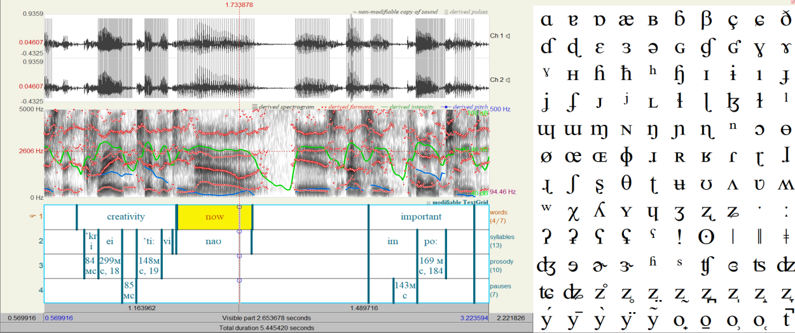
Рис 1. Пример из «Praat»
Во время анализа применялся выборочный метод, из всех выступлений выбирались 20 выразительных фрагментов, которые содержали в себе эмоциональный пик, ключевой тезис и кульминацию аргумента. Также описательный и сравнительный методы.
В данной работе Praat использовался для визуального подтверждения наличия риторических маркеров - фиксация границ, выявление микропауз, наблюдение за изменением F0 (в герцах), интенсивности в дБ (децибелах) и удлинения слогов в мс (миллисекундах)
Анализ проводился в соответствии с классификацией разработанной в главе 1 (Таблица 2.2) и включал данные этапы:
- Идентифицировать фрагменты содержащие намеренные просодические изменения слоговой структуры
- Определить риторический прием слогоделения (эмфатический, послоговый, ритмический, эвфонический)
- Произвести качественный анализ акустических параметров приема (паузы, удлинения, изменение тона, интенсивность)
- Выявить риторическую функцию выявленного приема в определенном контексте
Таблица 2.2. Классификация риторических приемов слогоделения в британской ораторской традиции
| Прием | Просодические средства | Акустические параметры | Риторический эффект |
|---|---|---|---|
| Эмфатический | Пауза перед эмфатически выделенным слогом, удлинение ударного слога, повышение F0 | Пауза перед эмфазой, длительность увеличивается, интенсивность выше 70 дБ, пик F0 | Акцент на значимости, эмоциональность |
| Послоговый | Равномерность длительности всех слогов, снижение редукции | Все слоги примерно равны, четкая артикуляция, равномерная интенсивность | Торжественность, сакрализация понятия |
| Ритмический | Нарушение изохронии, сдвиг ударного интервала | Интервалы 100–500 мс, разброс длительности | Динамика, эффект неотвратимости |
| Эвфонический | Аллитерация/ассонанс на стыке слогов | Шумовые всплески согласных, плавные форманты | Эстетическая убедительность, доверие |
На основе классификации данных приемов, в дальнейшем анализе каждый случай риторического слогоделения будет отнесен к одному из четырех типов, что позволит подсчитать частотность использования каждого из приемов и сопоставить функциональную нагрузку в публичных выступлениях носителей британского стандартного акцента.
Вследствие этого, методика исследования опирается на качественный подход, который сочетает описательный и сравнительный методы с инструментом в виде программы Praat, что позволяет обьективно зафиксировать риторические приемы слогоделения в британском ораторском стандарте.
2.2. Количественный анализ частотности риторических приемов
Анализ корпуса из 102 риторически маркированных фрагментов позволил установить частотность использования риторических приемов, которое представлены на Диаграмме 1. При распределении выделенных случаев обнаружилась отчетливая ассиметрия использования приемов, что относится к специфике британской ораторской традиции и коммуникативным приемам носителей RP
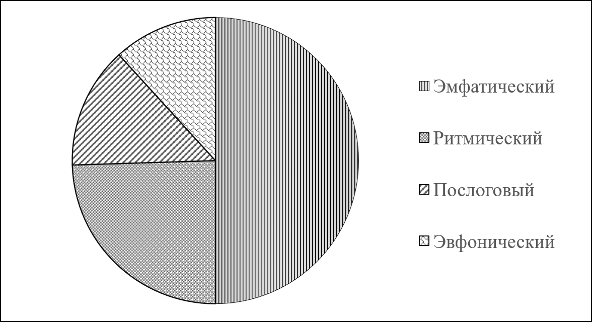
Диаграмма 1. Частотность использования риторических приемов слогоделения
Абсолютное лидерство принадлежит эмфатическому приему 50% от общего. Подобная плотность подтверждает теорию сформулированную в 1 главе данной работы. В RP безударные слоги редуцируются, а ударные слоги выходят на передний план, благодаря подобной контрастной эмфазе появляется когнитивный фокус на выделенном слоге, что становится основным рычагом для риторического слогоделения. Также из-за предсказуемого просодического ритма, где любое отклонение, как удлинение ударного слога, скачок частоты основного тона F0 и микропауза считывается как значимый сигнал, оратор может выхватывать смысловой центр на предсказуемом и редуцированном акустическом фоне, данное положение подтверждает теоретический тезис того, что риторическое слогоделение строится на управляемом нарушении просодической предсказуемости.
На второй позиции по частотности - ритмический прием 24,5% затем идет послоговое произношение 13,7%. Ритмический прием держит слушателя в режиме ожидания при нарушении акцентного ритма, что создает драматический эффект, также данный прием обеспечивает предсказуемость и структурированность в речи. В то время послоговое произношение используется, чтобы выделить сложную информацию или для того, чтобы придать особый вес слову. Данные приемы активно воздействуют на когнитивное восприятие информации. Ритмический прием управляет ожиданием слушателя, а послоговый облегчает восприятие сложных терминов либо информации засчет устранения редукции.
Эвфонический прием используется реже всех остальных приемов 11,8% это обьясняется его функцией создания благозвучия и эстетической убедительности, данный прием реализуется через такие фонетические инструменты, как аллитерация и ассонанс, а также связующие /r/, /w/, /j/ для плавных переходов. Эвфонические инструменты востребованы особенно в литературных художественных регистрах , где важно эстетическое воздействие на аудиторию.
Подобное соотношение указывает на иерархию коммуникативных приоритетов в риторическом слогоделении носителей золотого стандарта ораторской речи. На первом месте - когнитивный фокус на выделенности, на втором - ритмическая организация, на третьем терминологическая сакрализация и эстетическая убедительность, также в двух случаях было использование двух приемов одновременно (эмфатический и ритмический).
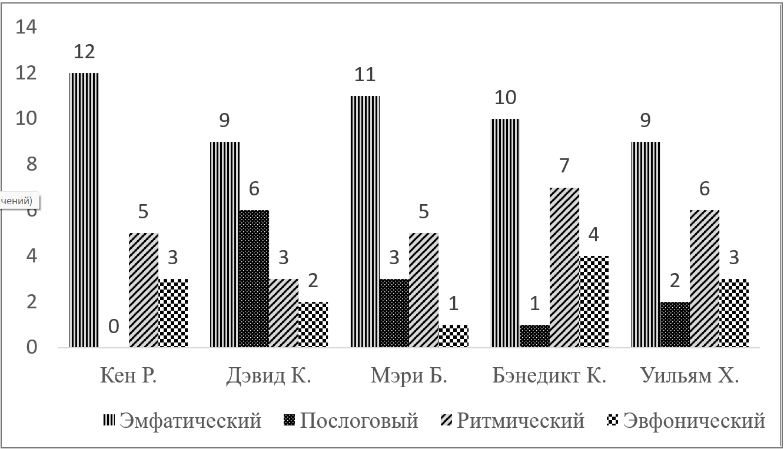
Диаграмма 2 Распределение риторических приемов по спикерам
Распределение приемов по отдельным спикерам вносит дополнительные детали. Эмфатический прием доминирует у всех пяти спикеров. У К.Робинсона эмфатический прием используется в 12 случаях, 5 ритмических, 3 эвфонических и ни одного послогового, эмфаза в его речи составляет 60% от общего числа (20 случаев) - это максимальная доля среди всех спикеров. Публицистический характер его выступлений обьясняет использование эмфазы, так как он ориентируется на убедительность и постоянной концентрации внимания аудитории, что обьясняет подобную концентрацию контрастных выделений. Например, во фразе «They are not frightened of being wrong», он использует резкий нисходящий тон и темповое растяжение слова wrong для драматизации главного вывода. Отсутствие послогового произношения обьясняется тем, что он не вводил специальную терминологию, которая требовала бы артикуляционную отчетливость.
У Дэвида Кристала распределение иначе: 9 эмфатических, 6 послоговых, 3 ритмических и 2 эвфонических случая (20 случаев). Эмфаза опускается до 45% самый низкий показатель, в то время послоговое произношение достигает 30%. Подобное соотношение понятно в контексте того, что это академический профиль, все лингвистические и исторические термины требуют снижения редукции для безошибочного понимания речи. Так, слово «dialects» произносится с четким послоговым членением [daɪ-ə-lekts], что облегчает запоминание термина.При этом Д.Кристал мастерски использует эмфазу для педагогической провокации, во фразе «to check the timetable for the schedule», он намеренно произносил слово schedule с американским кластером [sk]и экстремально длинном темповом растяжении, вызывая у аудитории когнитивный шок и обыгрывая тему диатопических различий.
В речи М.Бирд: 11 эмфатических, 3 послоговых, 5 ритмических и 1 эвфонический случай. Эмфаза составляет 55 %, послоговое 15% . В историческом дискурсе требуется баланс между эмоциональной подачей и фактологической точностью. Так эмфаза часто служит у нее для иронического разоблачения мифов. Во фразе «No way that ancient women…were privileged» экстремальный пик тона приходится на отрицаемом понятии privileged. А послоговое произношение берет эффект сакрализации исторических понятий Четкое произношение имени Cincinatus [sɪnsɪnatəs], пауза перед именем, артикулируется с торжественной равномерной интенсивностью, что выводит имя из потока обыденной речи в культурный памятник.
У Б.Камбербэтча- 10 эмфатических, 1 послоговый, 7 ритмических и 4 эвфонических (случаев всего 22), так как два случая из корпуса включали в себя по два приема. Эмфаза 45,5 %, ритмический прием 32 % и эвфонический 18%, единственный случай, в котором ритмический и эвфонический приемы в сумме превалируют эмфатический прием. Литературное чтение смещают фокус с логического убеждения на эмоциональное и эстетическое воздействие. Эвфоника здесь работает на создание звукового портрета хаоса «Clean clear but crazy like maschines» тесная аллитерация на [kl]и повтор взрывного [k] акустически показывает хаос ясности и безумия. Также ритмический прием используется для нагнетания напряжения «Wondering doubting fearing hurting» отсутствие межсловных пауз и морфологический параллелизм на /ing/ создают эффект непрерывного потока сознания.
У.Хейг - 9 эмфатических, 2 послоговых, 6 ритмических и 3 эвфонических случая (всего 20). Эмфаза 45%, ритмический прием 30%. Политическая речь Хейга строится на драматизации и струтктурированной организации аргументации. Во фразе «And we won’t change it by lecturing» драматическая пауза и пик интенсивности на won’tпревращают отрицание в заявление о смене внешнеполитической парадигмы. У Уильяма Хейга обилие ритмического параллелизма одной из запоминающихся конструкций «Being confident withou being arrogant, leading without monopolizing» симмитричная просодия усиливает противопоставление позитивных и негативных качеств лидера.
Сначала внимание аудитории вызывается через контраст, затем структурирование информации через ритм и четкость, и использование благозвучия для убедительности . Полученные данные образуют эмпирическую основу для качественного разбора приемов в живой публичной речи.
2.3 Качественная характеристика приемов риторического слогоделения
Эмпирический материал позволил проследить за тем, как четыре приема риторического слогоделения реализуются в публичной речи. Каждый из них обнаруживает особую просодическую организацию, подчиненную конкретным коммуникативным задачам.
2.3.1. Эмфатическое слогоделение
Эмфатический прием, который насчитывает в корпусе 50%, подтверждает статус универсального инструмента когнитивного фокуса. Его реализация и идентификация варьируется от классической модели - подготовительная пауза, пик F0, удлинение гласного в слоге до более комбинированных случаев.
Классическая эмфаза с подготовительной паузой. Показательным фрагментом выступает речь Уильяма Хейга: «It is a HUGE pleasure» (09:39).
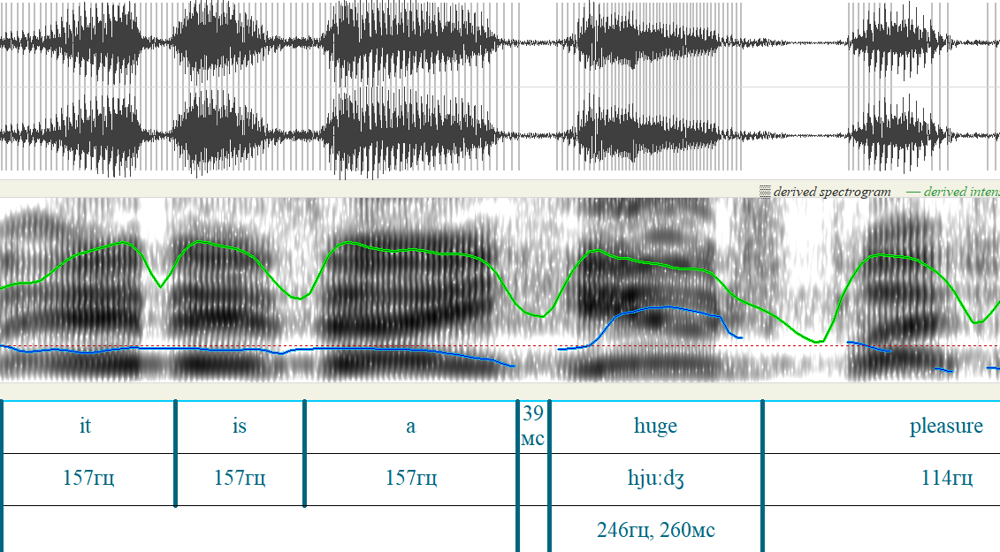
Рис.2. Реализация эмфазы во фразе «It is a huge pleasure»
На рисунке 2 видно, как кривая F0 была равномерной, а потом резко поднимается наверх. Фоновый уровень ЧОТ на словах «it is a» стабильно на отметке 157гц, без всплесков тона, равномерно. Микропауза 39мс предшествует эмфатически выделяемому «huge», где пик F0 поднимается до 264гц, а длительность слога составляет 260мс. Интенсивность равномерно высокая на протяжении всей фразы, пиковое значение F0 на «pleasure» 114гц, что намного меньше выделенного эмфатически слога «huge», и так смысловой центр высказывания смещается на «huge», а нисходящий контур маркирует завершенность и категоричность высказывания.
Эмфаза на отрицаемом понятии. Подобная стратегия зафиксирована в высказывании Мэри Бирд «No way than ancient Roman women…were privileged» (12:59). Экстремальный пик F0 406 гц на слоге [priv] приходится на отрицаемое понятие, что женщины не были привилегированны. Просодия работает в этом случае на иронию исторического мифа, слово акцентируется и отвергается одновременно. Пауза 232мс перед эмфазой усиливает эффект когнитивного шока.
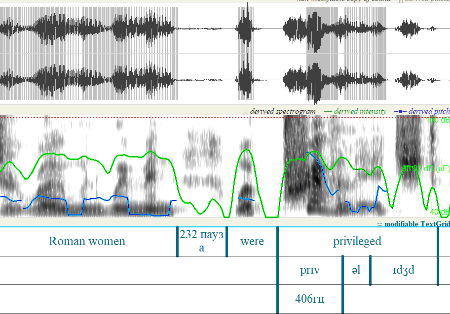
Рис. 3 Реализация эмфазы во фразе «Roman women were privileged»
Эмфаза с фонетической провокацией. Дэвид Кристал демонстрирует экстремальное удлинение в примере со словом «schedule» (33:37). Слово [schedule] произносится с американским [sk] вместо британского [ʃ] Длительность второго слога достигает 1265 мс, что в три-четыре раза превышает нейтральную норму, при пике F0314гц на первом слоге , также пауза перед в 469 мс, это использовалось для того, чтобы вызвать когнитивный шок, ирония, обыгрывание темы акцентов, чтобы акустически зафиксировать различие акцентов. Растяжение работает как инструмент демонстрации фонетической вариативности.
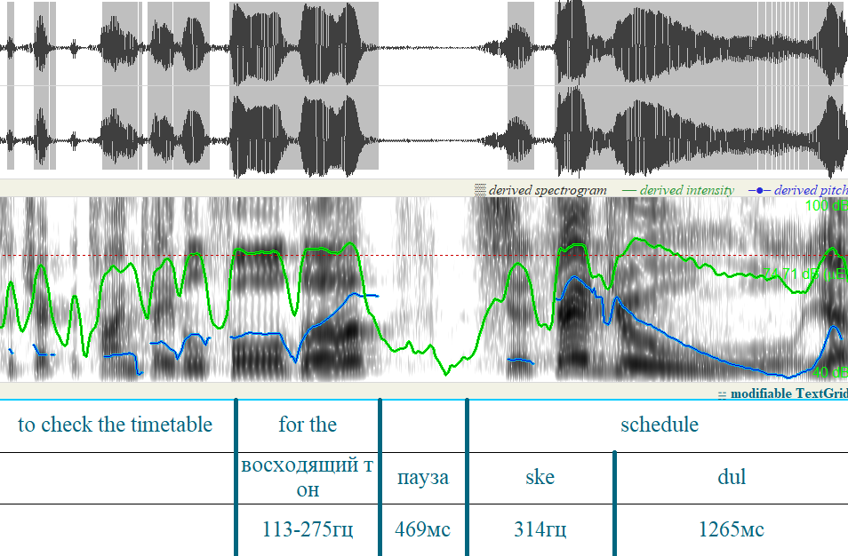
Рис.4 Реализация эмфазы во фразе «To check the timetable for the schedule»
В литературном чтении Б.Камбэрбетча эмфатический прием приобретает театральный характер. Во фразе make the abound with nonsense» (02:02) слово abound растягивается до 499мс. Просодия отражает семантику - удлинение гласного акустически воплощает изобилие.
Особую разновидность эмфатического приема представляет просодическая изоляция слова, когда слово выделено с двух сторон драматическими паузами, что превращает выделенное слово в самостоятельный блок. Показательным примером выступает его другой фрагмент чтения письма Сола Левитта «You hate every minute of it…DON’T…» (0:19)
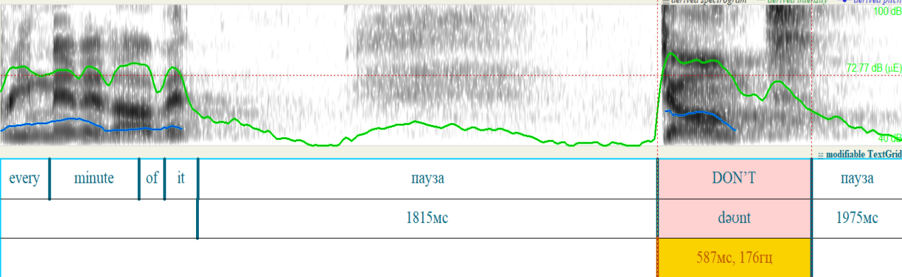
Рис.5 Реализация эмфазы во фразе «Every minute of it…DON’T»
На рисунке 5, отчетливо видна огромная дыра паузы, слово DON’T вырывается из речевого потока. Можно заметить на рисунке конструкцию «You hate every minute of it» с равномерной частотой основного тона, что создает нейтральный акустический фон. Драматическая пауза длительностью в 1815мс создает напряжение, а пауза после выделенного слова заверщает просодическую изоляцию. Само слово DON’T произносится с частотой основного тона 176 гц и нисходящим мелодичным контуром. В британской традиции нисходящий тон маркирует категоричность и завершенность « Falling contours are usually associated with the idea of finality and completeness whereas rises are associated with continuity.» [35]. Оратор таким способом закрывает мысль и не оставляет пространств для возражений. Длительность слова достигает 587мс, что дольше остальных лексических единиц. Нисходящий контур завершает речь категоричным запретом, а темповое растяжение слова позволяет адресату осознать смысл запрета, что по контексту превращает отрицание в торжественное разрешение прекратить самобичевание.
Данный пример наглядно показывает, что эмфатический прием может реализоваться в грамматической связке и превратить его в риторический жест, с помощью паузы, которая работает как механизм выделения слова из речевого потока, а также нисходящим тональным контуром и темповым растяжением.
В выступлении Кена Робинсона «Children starting school this year…will be retiring…in twenty sixty five» (02:22) выстроена сложная эмфатическая конструкция, которая нацелена на темпоральный шок.
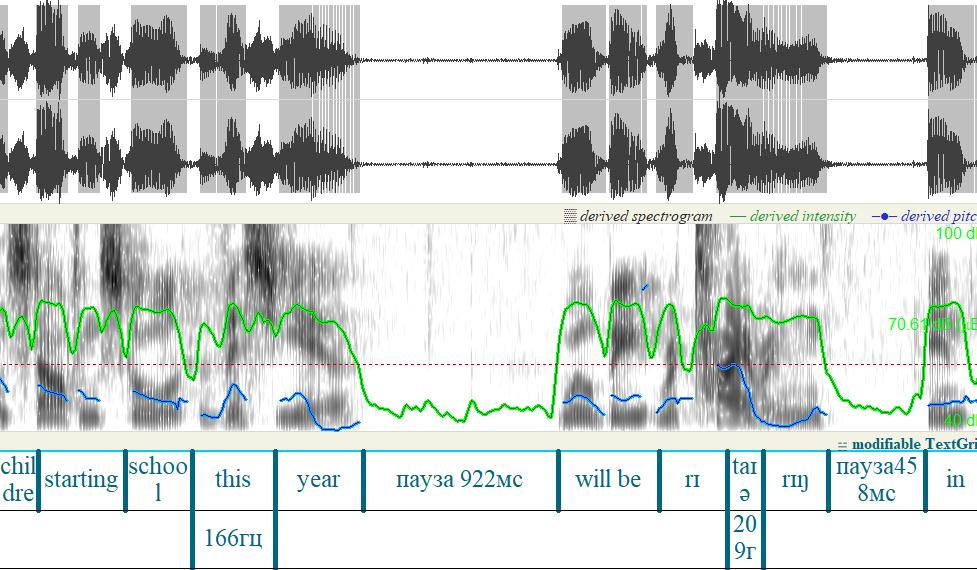
Рис. 6 Реализация эмфазы во фразе «Children starting school this year…will be retiring…in twenty sixty five»
На рисунке 6 , можно увидеть две паузы , разделяющие высказывание на три смысловых блока. Первая пауза 922 мс отделяет this year от глагольной группы will be retiting , а вторая отсекает его от указания года. С помощью подобного членения оратор превращает обыденное утверждение о выходе на пенсию в риторическое путешествие во времени, так как первая пауза фиксирует отправную точку (дети, которые идут в школу сейчас) и второй момент напряженное ожидание перед тем, как оратор назовет конкретную дату. Основной момент это ядерный ударный тон на слоге [taɪə] в котором частота основного тона достигает 209 гц. Подобное размещение тонального пика на ударном слоге соответствует принципам RP, где ударный слог выступает в качестве семантического якоря. В данном случае ядерный тон выделяет ключевое действие выхода на пенсию, что превращает его в кульминацию высказывания.
В контексте речи К.Робинсона, он использует просодическую конструкцию, которая выполняет функцию когнитивного якоря, слушатель переживает мысль о далеком будущем через паузы и тональный пик. Оратор заставляет аудиторию осознать последствия образовательной системы не через логические аргументы, а через переживание временного масштаба на физическом уровне, также раздельное произношение года превращает дату в самостоятельный блок, что подчеркивает его значимость и отдаленность. Слушатель пересобирает видение о времени, что делает его аргумент более эмоциональным и убедительным.
2.3.2. Послоговое произношение
Послоговое произношение в британской традиции выступает в качестве инструмента для сакрализации понятий и когнитивной разгрузки, что облегчает понимание сложных или новых слов. Прием реализуется через устранение редукциии выравнивании длительности слогов в одном слове, что превращает нейтральную лексику в более артикулируемую и торжественно звучащую. Критерием идентификации был разброс длительности менее 25% и равномерная интенсивность всех слогов.
В академическом дискурсе послоговое произношение облегчает восприятие сложных терминов. Дэвид Кристал во фразе «Dialects are vocabulary and grammar» (03:10) произносит слово [daɪə] с четкой артикуляцией и устранением редукции. С помощью подобной стратегии аудитория может зафиксировать понятиие, не используя когнитивный фокус на распознавание слитного звучания.
В историческому дискурсе послоговое произношение приобретает статус инструмента сакрализации Наиболее ярким примером послогового произношения выступает прилагательное «lurid» в речи Мэри Бирд, в котором два слога практически одинаковые по длительности 438мс и 419мс.
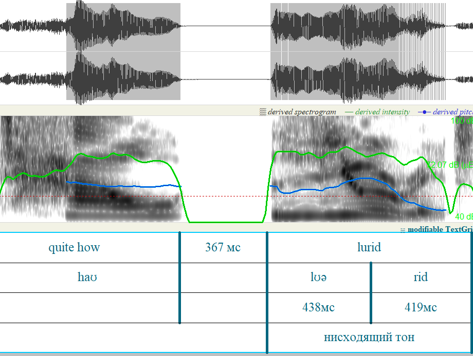
Рис. 7 Реализация послогового произношения во фразе «quite how lurid»
На рисунке отчетливо видна идентичная длительность обоих слогов при отсутствии редукции безударной позиции. В отличие от нейтральной речи, в которой безударные слоги редуцируются, в данном примере оратор сознательно выравнивает выделенность слогов, чтобы придать торжественности. Также в ходе анализа было зафиксировано, что это комбинированный прием, в котором сочетается эмфатический и послоговый приемы. Пауза в 367мс и восходящий контур на lurid выполняет функцию привлечения внимания аудитории к основному понятию, подобная стратегия усиливает эффект сакрализации понятия, и его значимость в контексте древнеримской эстетики.
Также ярким примером выступает артикуляция латинского топонима Circus Maximus в лекции Мэри Бирд. Оратор намеренно отказывается от характерной связной речи, она выделяет каждый слог. На рисунке 8, виден разброс интенсивности между слогами, который составляет всего 8дБ, длительность слогов примерно одинакова, кривая основного тона без резких скачков. Подобная интонационная сдержанность заставляет слушателей воспринимать топоним как самостоятельный и весомый обьект, что подчеркивает культурную значимость данного обьекта.
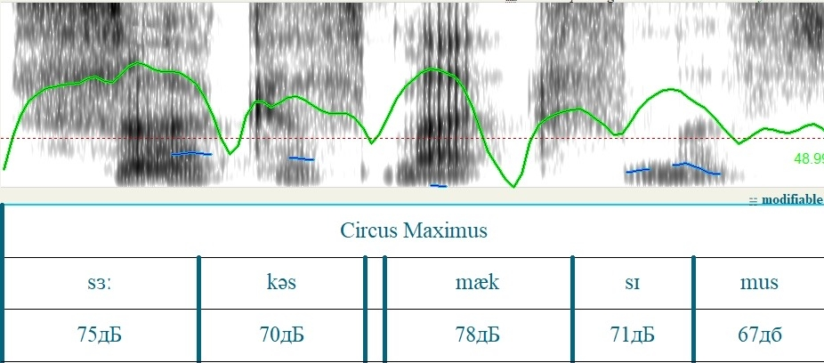
Рис. 8 Реализация послогового произношения во фразе «Circus Maximus»
Также особый интерес представляет расширение данного приема за пределы отдельного слова до целой синтагмы. В актерском чтении у Б.Камбербэтча есть фраза «Relax…and let everything to to hell» демонстрирует как послоговое произношение может трансформировать идиоматическое выражение в торжественное философское высказывание . Оратор выстраивает полное выравнивание интонационной выделенности, все слова фразы включая служебные, получают одинаковую интенсивность. Внутри слова everything каждый слог практически с идентичной длительностью 113,95,93мс, а безударный в норме слог [ri] получает тональный контур .Драматическая пауза после relax задает тон всему высказыванию, устранение редукции и четкое произношение на уровне всей фразы призывает к акту разрешения освобождения от ответственности.
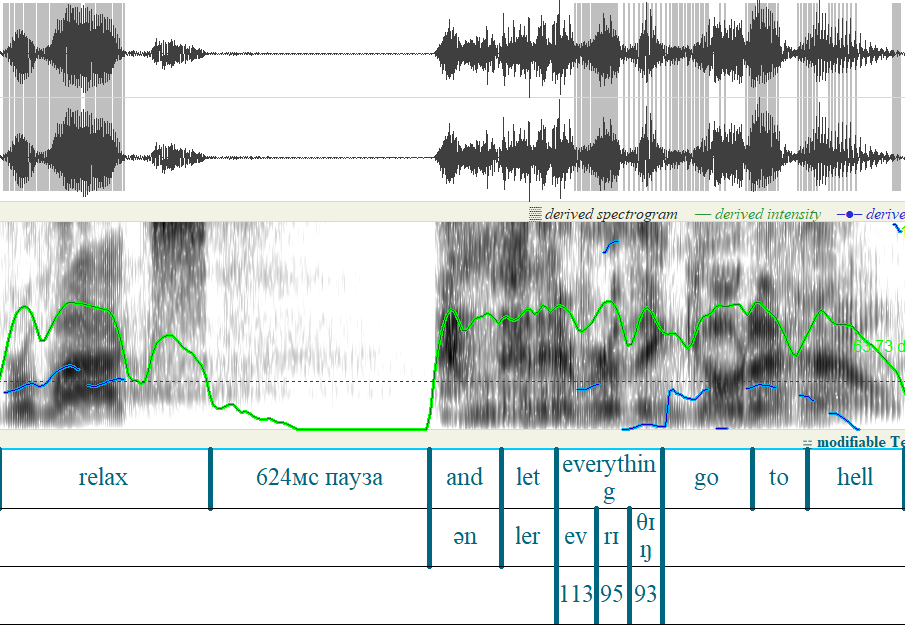
Рис.9 Реализация послогового произношения во фразе «Relax…and let everything go to hell»
Послоговое произношение в британской ораторской речи выступает как инструмент управления вниманием и семантическим весом единицы, ораторы намеренно выделяют каждый слог устраняют редукцию, чтобы послоговое произношение послужило коммуникативной задаче. В академическом и историческом дискурсе с помощью данного приема можно облегчить понимание сложных терминов. В литературном контексте послоговость расширяется с уровня отдельного слова до целой синтагмы, и подобным образом послоговое произношение иллюстрирует как спикер подчиняет фонетическую структуру слога задачам риторики.
2.3.3. Ритмическое слогоделение
Ритмическое слогоделение в британском стандарте опирается на акцентно-ритмовую природу английского языка, что превращает естественную изохронию в инструмент управления вниманием. В ходе анализа было выявлено, что ораторы используют как строгое соблюдение ритма так и ее намеренное разрушение, примером выступает ритмическое перечисление с изохронией фрагмент лекции Дэвида Кристала «The first… English …dialect…dictionary»
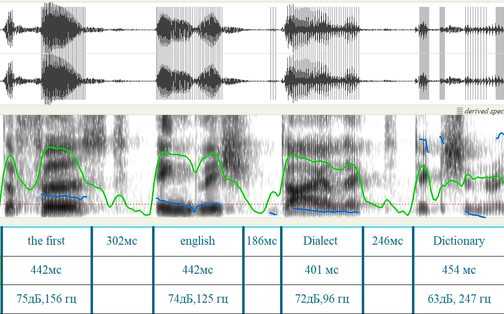
Рис.10 Реализация ритмического слогоделения во фразе «The first… English …dialect…dictionary»
Как видно на рисунке спикер выстраивает равные длительности слов 442мс до 454мс, разделяет их ритмическими паузами от 186-302мс. Кривая основного тона демонстрирует нисходящий контур от 156гц до 96гц которое резко обрывается кульминационным скачком 247гц на dictionary. Подобное ритмическое перечисление превращается в торжественное провозглашение, где каждый элемент получает свою выделенность, а финальный термин акустически закрепляется как главный смысловой элемент.
Альтернативной стратегией в котором ритмическое членение достигается засчет серии микропауз похоже на эффект метронома. У Мэри Бирд данная стратегия используется в высказывании «That is where…the real…Roman…excitement…of sport» (07:21).
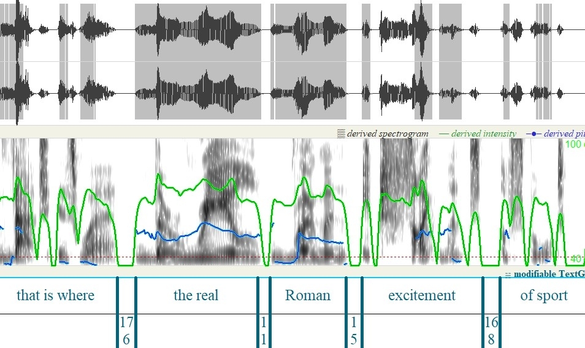
Рис. 11 Реализация ритмического слогоделения во фразе «This is where the real Roman excitement of sport»
На рисунке выделены микропаузы на стыке всех слов длительностью 176, 118,152 и 168мс , спектограмма отчетливо прослеживает серию коротких разрывов фонации, которые разделяют слова при этом произносятся на нейтральном уровне частоты тона без пиков эмфазы. Интонационная сдержанность в сочетании с паузацией создает эффект взвешенного произнесения каждого элемента, что заставляет аудиторию фокусироваться на изолированных понятиях.
Наиболее интересным проявлением ритмического слогоделения выступает сознательное нарушение паттерна, порождающего эффект ритмического шока, во фрагменте «Stupid, dumb,unthinking,EMPTY...(2804мс)...DO»(02:40)
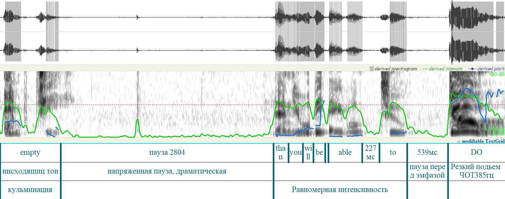
Рис. 12 Реализация ритмического слогоделения во фразе «Stupid, dumb,unthinking,EMPTY...DO»
Бенедикт Камбэрбетч сначала создает предсказуемый ритм перечисления прилагательных с кульминацией на слове empty, которая отмечена нисходящим тоном. Затем этот паттерн обрывается на 2804мс (максимально значение во всем корпусе), за этим разрывом стоит серия микропауз длиной 227 и 539 мс и конечное эмфатически выделенное DO c пиком частоты основного тона 385 гц. Сознательный сбой изохронии работает как риторический маневр, разрушая ритмического ожидание, переключая внимания с описания проблемы на ее решение.
Также особую роль в ритмической организации слогоделения играет интеграция реакции аудитории в просодию выступления. В выступлении Дэвида Кристала во фразе «The British accent is the sexiest one in the world (смех 2346мс) beating the French» (27:28)
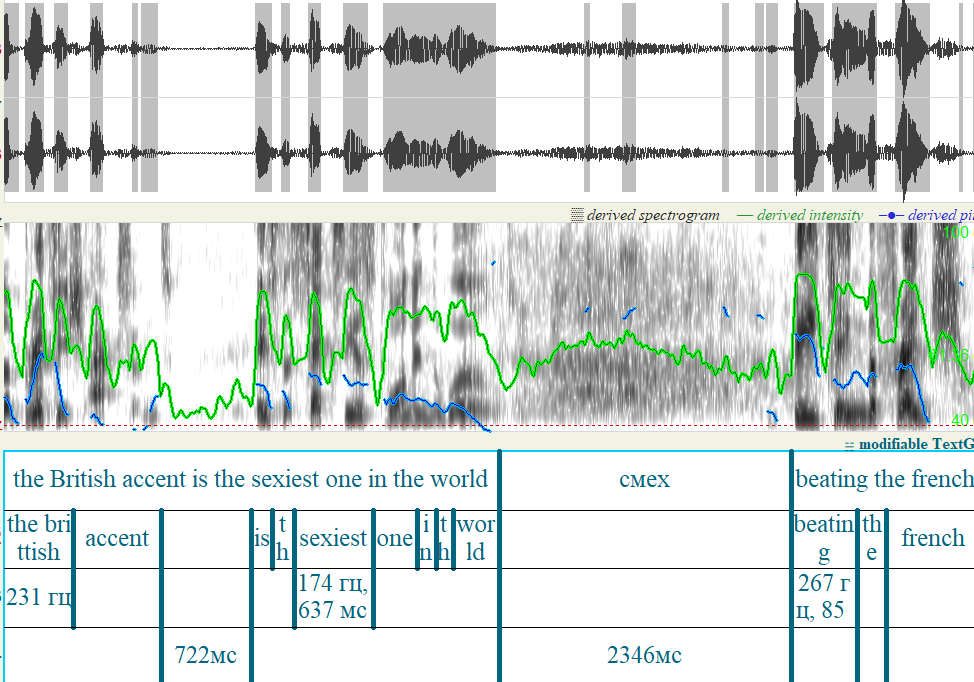
Рис. 13 Реализация ритмического слогоделения во фразе «The British accent is the sexiest one in the world (смех 2346мс) beating the French»
На рисунке 13 видно, как оратор использует паузу заполненную смехом зала, как инструмент риторической структуры. Подобный разрыв фонации не прерывает, а усиливает ритмическое ожидание. За паузой стоит кульминационное слово beating, которое произнесено с интенсивностью 85дБ и пиком F0 267 гц. Оратор не просто дожидается окончания реакции аудитории, он заметно встраивает в просодический рисунок, и стирает границу между монологом и диалогом, что превращает ироническое сравнение в завершенную кульминацию.
В образовательном дискурсе Кена Робинсона ритмическое слогоделение нередко берет на себя комедийную функцию, что позволяет оратору играть с ожиданиями публики. В качестве данного примера служит фрагмент рассказ о трех мальчиках, которые интерпретируют библейский сюжет на своем примере «Gold…myrrh…Frank sent this» (05:20)
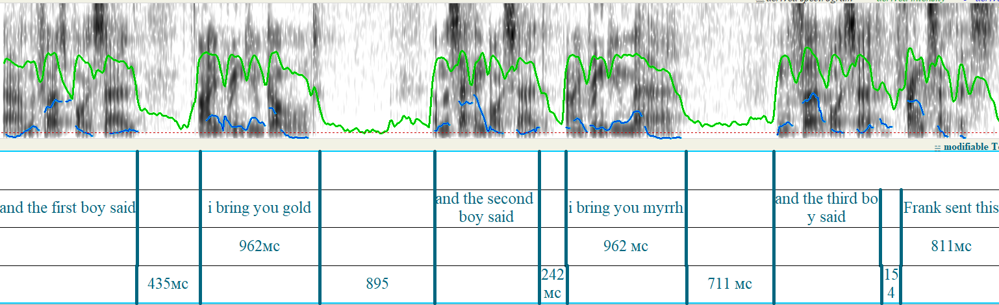
Рис.14 Реализация ритмического слогоделения во фразе «And the first boy said, I bring you Gold…and the second boy said, I bring you myrrh…and the third boy said, Frank sent this»
На рисунке 14 можно увидеть как спикер выделяет конструкцию I bring you gold и I bring you myrrh в одинаковую длительность по 962мс каждая, подобная изохрония создает шаблон и ритмическую предсказуемость, зрители ожидают торжественное и размеренное перечисление библейских даров, однако параллельно сжимаются и паузы между репликами из 895мс до 711мс и затем до 154м. На осцилограмме можно заметить данное темповое ускорение, слова сливаются и становятся ближе, а рисунок становится более напряженным и стремительным. Кульминацией становится резкий сбой изохронии на фразе Frank sent this длительность фразы 811мс, что заметно короче предшествующих 962мс. Предсказуемый ритмический рисунок срывается. Оратор использует темповое ускорение для передачи непосредственности третьего мальчика, который сказал быстро целую фразу вместо слова Frankincense (ладан), подобным способом оратор намеренно нарушил акцентный ритм для создания комедийного эффекта. Подобная ритмическая стратегия легко разрушаема засчет начальной четкой и строгой изохронии, сжатие слогов в фразе и устранение пауз внутри создает контраст.
2.3.4. Эвфоническое слогоделение
Эвфоническое слогоделение работает на создание общего благозвучного акустического фона формирующего этос оратора. Эвфоника важна в контексте эстетического измерения речи, благозвучие становится маркером компетентности и убедительности. Британская ораторская традиция уделяет особенное внимание эвфонике, так как в условиях RP ее консонантной насыщенностью именно гармоничное сочетание слогов отличает профессиональную речь от хаотического потока речи.
Наиболее выразительным примером является фрагмент из литературного чтения Б.Камбербэтча : «Clean clear but crazy like machines» (01:45). В данной конструкции аллитерация на [k] охватыет три слова, а в словах clean и clear реализуется тесная аллитерация на кластере [kl]. На спектограмме два начальных шумовых всплеска выглядят идентично. Чередование взрывных и назальных согласных имитируют смысл высказывания, где ясность и безумие соседствуют вместе. Хаотичное расположение формант в области взрывного /k/ на спектограмме демсонстрирует глухой и шумный /k/, что подтверждает наличие аллитерации на фонетическом уровне.
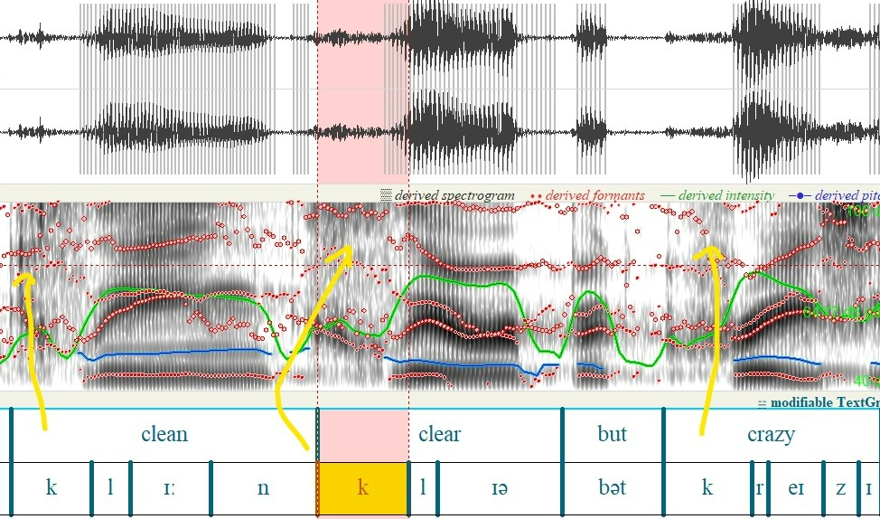
Рис. 15 Реализация эвфонического слогоделения во фразе «Clean clear but crazy»
В академическом дискурсе эвфония приобретает запоминаемость, конструкция Дэвида Кристала «being posh earns you the dosh». В данной короткой фразе сочетаются аллитерация на [p] и [d], ассонанс на кратком гласном [ɒ]и полная рифма на posh и dosh [ʃ] . Подобным образом, из нейтрального утверждения об соотношении статуса и денег, данная фраза превращается в запоминающуюся формулу. Благозвучие облегчает запоминание.
Особенную разновидность эвфонии представляет процесс связной речи, что служит конструированию этоса говорящего. Во фрагменте «And let everything go to hell» (03:03). Б.Камбербэтч создает плавный поток через элизию и интруизивный /r/. Согласный [t] в слоге выпадает на стыке с гласным и на место /t/ вставляется /r/. Плавность констрастирует с рваным ритмом предыдущих перечислений.
В политическом дискурсе эвфоника сработала через контраст звуков, что создает антитезу. Уильям Хейг в метафоре «A world not of blocks but of networks» создает противопоставление, аллитерация на взрывном [b] создает эффект закрытости и тяжеловесности, также сонорный [n]передает плавность и открытость. Слово blocks представляет собой закрытый короткий слог, с консонантным кластером [ks]в конце, что создает отрывистость , в противоположность networks содержит долгий гласный в слоге [ɜː], который оратор намеренно растягивает, а сонорный [n]в начале передает плавность . Эвфоническая организация подобным способом превращает ключевую метафору в переход от жесткой силы к мягкой и слушатель воспринимает противопоставление на уровне звучания.
В образовательном дискурсе эвфоническое слогоделение выполняет функцию убедительности. Кен Робинсон во фразе «Our education system has mined our minds» использует аллитерацию на сонорном [m]в сочетании с ассонансом на дифтонге /ai/ в mined our minds . На спектограмме видна серия повторяющихся шумовых всплесков [m]. Благозвучие высказывания делает его более весомым и убедительным.
Несмотря на низкую частотность использования эвфонического приема, оно играет важную роль в формировании эстетического воздействия, где благозвучие тоже может выступать в роле инструмента воздействия.
Основные выводы по 2 главе
Практический анализ ста риторически акцентных фрагментов из публичных выступлений RP подтвердил теоретические положения о функциональной нагрузке в слогоделении британского ораторского канона. При количественном распределении приемов выявилась четкая иерархия, в котором эмфатическое слогоделение занимает доминирующую позицию 50% , что отражает приоритетность когнитивного фокуса в условиях сильной редукции безударных слогов. Ритмический прием используется в 24,5% , и составляет четверть корпуса, а послоговое произношение 13,7, эвфоническое 11,8%. Подобный разброс не случаен, он вытекает из самой природы RP, в котором предсказуемый акцентный ритм создает среду для управляемых выделений.
Качественный разбор показал, что каждый прием реализуется через просодические маркеры. Эмфатическое слогоделение выделяется от классической модели (пауза и пик ЧОТ f0) до просодической изоляции слова между двумя драматическими паузами, как в примере DON’T у Камбербэтча. Послоговое произношение работает на облегчение запоминания термина и сакрализацию понятия через устранение редукции и выравнивание длительности слогов. Ритмическое слогоделение использует как строгую изохронию, так и сознательное нарушение, что создает ритмический шок у аудитории. В образовательном дискурсе ритмический прием берет на себя функцию комедийного тайминга, как в примере Робинсона «Gold… myrrh…Franksent this». Эвфоническое слогоделение конструирует этос оратора через аллитерацию, звуковые формулы, антитезу через контраст звуков и процессы связной речи.
Жанровая специфика определяет выбор приемов. В образовательном дискурсе у К.Робинсона преобладает эмфатический прием (60%), в академическом у Д.Кристала возрастает доля послогового произношения 30%, в литературном чтении Б.Камбербэтча ритмический и эвфонический прием вместе превышают эмфатический. Политическая речь У.Хейга строится на сочетании эмфазы и ритмического параллелизма. Анализ в программе Praat подтвердил, что риторическое слогоделение не является случайным набором интонационных колебаний, каждый акустический параметр подчинен определенной задаче.
Полученные данные доказывают, что слог в британской публичной речи не просто произносительная единица, а пластичный инструмент когнитивного и эмоционального воздействия на слушателей. Комбинация данных риторических приемов создает сложные риторические эффекты, в котором каждый элемент выполняет свою функцию.
ЗАКЛЮЧЕНИЕ
Риторическое слогоделение функционирует на стыке фонетики, когнитивной лингвистики и теории убеждающей коммуникации. Риторическое подчиняет слоговую структуру задачам выразительности, когнитивного контроля и эмоционального воздействия на аудиторию. Инструментами этого воздействия являются ударение, интонация, темп и паузы, которые вступают во взаимодействие с внутренней организацией слога.
Ключевым фактором, который определяет специфику риторического слогоделения в британском варианте - стандарт Received Pronunciation. Сильное примыкание слогов, редукция безударных гласных до нейтрального шва и четкое соблюдение акцентного ритма создают предсказуемый акустический фон. Именно на этой основе британский ораторский канон разворачивает четыре функции: эмфатическую, ритмообразующую, послоговую и эвфоническую. Ударный слог в таких условиях становится семантическим якорем, с помощью которого слушатели интерпретируют слышимое.
Эмпирическая часть работы опиралась на акустико-слуховой анализ корпуса публичных выступлений. Инструментальный анализ позволил перевести субьективные впечатления от речи в обьективные акустические параметры. Анализ ста двух риторически маркированных выявил четкую иерархию коммуникативных приоритетов. Абсолютное доминирование эмфатического приема подтверждает , что главной задачей оратора является когнитивный фокус, достигаемый через контраст на фоне редуцируемых безударных позиций. Ритмический и послоговый приемы занимают промежуточные позиции, отвечая за структурирование информации и облегчение ее восприятия, в то время эвфонический работает на этос оратора и эстетическую убедительность.
Качественный разбор показал, что ораторы не просто следуют фонетическим нормам, но и сознательно манипулируют. Эмфаза реализуется не только через классический пик частоты основного тона и микропаузы перед, но и через темповое растяжение, двойное выделение, и даже просодическую изоляцию слова между двумя паузами. Послоговое произношение способно расширяться с одного термина до целой фразы, превращая в торжественное выражение. Ритмическая организация варьируется между строгой изохронией и сознательным нарушением темпа, в образовательном дискурсе берет на себя функцию комедийности. Эвфонические средства, включая аллитерацию, ассонанс и процессы связности речи создают плавность речи, который формирует образ компетентного спикера.
Понимание риторических возможностей слога расширяет представление о механизме речепроизводства и восприятия. Выявленные закономерности доказывают, что просодические навыки невозможно сформулировать исключительно только артикуляционными упражнениями. Осознанное использование приемов риторического слогоделения должно стать частью обучения культуре публичной речи, чтобы говорящий мог не просто произносить отдельные звуки правильно, но и управлял вниманием и эмоциями аудитории.
Список использованных источников
- Антипова, А. М. Система английской речевой интонации : учеб. пособие для ун-тов / А. М. Антипова. – М. : Высшая школа, 1979. – 158 с.
- Андросова, С. А. Противоречивые моменты в интерпретации английского фонологического слога / С.А. Андросова // Вестник МГЛУ. – 2015. – № 4. – С. 52–58.
- Афанасьева, И. В. Лингво-риторические особенности англоязычного интервью / И.В. Афанасьева // Вестник МГУ. Серия 9: Филология. – 2010. – № 4. – С. 78–85.
- Ахманова, О. С. Словарь лингвистических терминов / О.С. Ахманова. – 2-е изд., стер. – М. : УРСС, 2004. – 608 с.
- Береснева, М. А. Американский диатопический вариант английского языка в свете слоговой фонетики аффектов / М.А. Береснева. – М. : МГУ, 2012. – 215 с.
- Береснева, М. А. Послоговая речь в американском диатопическом варианте английского языка / М.А. Береснева // Вестник РГГУ. Серия «Филология. Искусствоведение». – 2012. – № 16. – С. 139–144.
- Беспалова, И. М. Ритмическая организация англоязычного стихотворного текста в синхронно-диахронном аспекте / И.М. Беспалова // Иностранные языки: теория и практика. – 2013. – № 2. – С. 35–42.
- Богданова, Е. М. Темп как компонент английской интонации / Е.М. Богданова. – Бирск : Бирский филиал БГУ, 2015. – 124 с.
- Бочкарева, С. В. Риторика и культура общения в школе: предмет – методика – учебники / С.В. Бочкарева. – М. : МОУ Гимназия, 2005. – 189 с.
- Бурая, Е. А. Методы исследования восприятия речевого ритма / Е.А. Бурая. – М. : ФГПН МГЛУ, 2015. – 96 с.
- Глазунова, Г. М. Фонетика английского языка : учеб. пособие для студ. высш. учеб. заведений / Г. М. Глазунова. – М. : Академия, 2007. – 256 с.
- Дечева, С. В. Слогоделение в английской речи: Когнитивная силлабика : дис. ... д-ра филол. наук / С.В. Дечева. – М., 1995. – 379 с.
- Дечева, С. В. Особенности фразового выделения в английской художественной прозе / С.В. Дечева, А.В. Копанева // Вестник Московского университета. Серия 9: Филология. – 2019. – № 3. – С. 74–85.
- Дрозд, Д. А. Эвфонические средства в английских адъективных фразеологических единицах / Д.А. Дрозд. – Минск : БГУ, 2020. – 156 с.
- Зинатуллин, В. Ш. Эмфаза в англоязычной научной литературе: Способы выражения и принципы перевода / В.Ш. Зинатуллин, Е.Ю. Чибисова // Филологические науки. Вопросы теории и практики. – 2009. – № 2. – С. 45–49.
- Зиндер, Л. Р. Общая фонетика : учеб. пособие для студ. вузов / Л.Р. Зиндер. – 2-е изд., перераб. и доп. – М. : Высшая школа, 1979. – 312 с.
- Ильина, О. Я. Проблемное поле современной риторики как теории убеждающей коммуникации / О.Я. Ильина // Актуальные проблемы гуманитарных и естественных наук. – 2014. – № 2-1. – С. 263–267.
- Ильина, О. Я. Современная риторика как общая теория убеждающей коммуникации / О. Я. Ильина // Проблемы современной науки и образования. – 2013. – № 4 (18). – С. 44–48.
- Киселев, А. А. Received Pronunciation как языковой стандарт британского английского / А.А. Киселев, А.В. Коршунов // Вопросы филологии. – 2020. – № 3. – С. 45–52.
- Копанева, А. В. Жанрово-стилистическая маркированность акцентуации в английском языке с позиций когнитивной силлабики / А.В. Копанева. – М. : МГУ, 2022. – 248 с.
- Короткина, И. Б. Непростая история: научное письмо от классической риторики до риторики и композиции / И.Б. Короткина // Высшее образование в России. – 2021. – № 12. – С. 75–86.
- Круттенден, А. Gimson's Pronunciation of English / А. Круттенден. – London : Routledge, 2014. – 362 с.
- Кузнецов, И. В. Риторика, или Ораторское искусство / И.В. Кузнецов. – М. : Литрес, 2022. – 328 с.
- Лебедева, Т. О. К вопросу о словесном ударении в американском варианте английского языка / Т.О. Лебедева. – М. : МАКС Пресс, 2006. – 89 с.
- Платонова, Н. Н. Риторика Аристотеля: логос, этос, пафос / Н.Н. Платонова // Вестник древней истории. – 2015. – № 2. – С. 45–58.
- Пономарева, М. А. Слоговое своеобразие фонетики аффектов в американском диатопическом варианте английского языка / М.А. Пономарева. – М. : МГУ, 2013. – 176 с.
- Прзедлацка, Я. Estuary English and RP: Some Recent Findings / Я. Прзедлацка // English Language and Linguistics. – 2002. – Vol. 6, No. 2. – P.91–316.
- Сазонова, Н. А. К проблеме изучения ритмической структуры английского языка на уроке / Н.А. Сазонова. – М. : МГУ, 2018. – 142 с.
- Тимофеева, М. К. Теория риторической структуры как инструмент анализа стихотворных текстов / М.К. Тимофеева // Вестник ТГУ. – 2020. – Т. 25. – № 3. – С. 412–420.
- Цицерон, М. Т. Трактат об ораторе / М.Т. Цицерон ; пер. с лат. Ф.А. Петровского. – М. : Наука, 1972. – Кн. II, гл. 27, § 115.
- Чикилева, Л. С. Прагмалингвистические особенности современной англоязычной риторики политического конфликта / Л.С. Чикилева, Е.Ю. Алешина. – М. : ФУПРФ, 2023. – 312 с.
- Шмаков, А. А. Цифровая риторика как инструмент создания позитивного речевого образа власти / А.А. Шмаков // Алтайский вестник ГМС. – 2020. – № 4. – С. 88–95.
- Щерба, Л. В. Фонетика французского языка (с приложением «Очерк по русской фонетике») / Л. В. Щерба. – М. : Иностранная литература, 1953. – 312 с.
Электронные ресурсы
- Вострикова, Н. М. Этос как одно из оснований классической риторики и идейно-смысловой компонент профессионально-педагогического диалога на уроке русского языка [Электронный ресурс] / Н.М. Вострикова. – URL: https://cyberleninka.ru/article/n/etos-kak-odno-iz-osnovaniy-klassicheskoy-ritoriki-i-ideyno-smyslovoy-komponent-professionalno-pedagogicheskogo-dialoga-na-uroke-russkogo/viewer (дата обращения: 15.06.2026).
- Понятие слога. Принципы слогоделения и слогообразования в английском языке [Электронный ресурс]. – URL: https://openedo.mrsu.ru/catalog/Gumanitarnie/2012/Anashkina/res/resource_0/id_80/1.htm (дата обращения: 10.06.2026).
- Программа для фонетического анализа Praat [Электронный ресурс]. – URL: https://github.com/praat/praat.github.io (дата обращения: 12.06.2026).
- Что такое этос, пафос, логос в риторике [Электронный ресурс]. – URL: https://oratoris.ru/chto-takoe-etos-pafos-logos/ (дата обращения: 14.06.2026).
- Cruttenden, A. Intonation and the Clause [Электронный ресурс] / A. Cruttenden // Anglophonia. – 2001. – URL: https://journals.openedition.org/anglophonia/3297 (дата обращения: 10.06.2026).
- Кристал, Д. The Cambridge Encyclopedia of the English Language [Электронный ресурс], 2019, – URL: https://www.researchgate.net/publication/345270190_David_Crystal_The_Cambridge_Encyclopedia_of_the_English_Language_Third_edition_Cambridge_University_Press_2019_506_pages (дата обращения: 15.06.2026).
- Kozlyaninova, I. P. Сценическая речь [Электронный ресурс] / И.П. Козлянинова. URL: https://teatrsemya.ru/lib/mast_akt/scen_rech/kozlyaninova_stsenicheskaya_rech.pdf (дата обращения: 15.06.2026).
Приложение 1
Таблица 2.1 – Корпус анализа
| № | Спикер | Название выступления | Жанр | Длительность | Характеристика |
|---|---|---|---|---|---|
| 1 | Sir Ken Robinson | Do schools kill creativity? (TED talk, 2006) | Образовательная лекция | 20 минут | RP с йоркширскими интонационными особенностями |
| 2 | Prof. David Crystal | At the Edinburgh international book festival | Академическая лекция | 52 минуты | Классический RP, эталонная артикуляция |
| 3 | Mary Beard | Hollywood lied to you about Ancient Rome. Here's the truth Mary Beard: Full Interview | Историческая лекция | 1 час 18 минут | Классический RP |
| 4 | Benedict Cumberbatch | Benedict Cumberbatch reads Sol LeWitt's letter to Eva Hesse | Литературное чтение | 6 минут | RP, театральный тембр |
| 5 | William Hague | Major Speech on International Foreign Policy | Политическая речь | 57 минут | Формальный парламентский RP |
Приложение 2
Таблица анализа риторических приемов слогоделения публичных выступлений носителей RP
| Спикер | Тайм код | Слово/фраза | Тип приема | Краткие акустические маркеры | Риторический эффект |
|---|---|---|---|---|---|
| Кен Робинсон | 05:35 | they're not frightened of being wrong | Эмфатический | Удлинение слова wrong (438мс), резкий нисходящий тон (184гц -> 71гц) | Драматизация, пафос |
| Кен Робинсон | 06:08 | educating people out of their creative capacities | Эмфатический | Микропауза перед out (141 мс) и резкий подьем тона (172гц), редуцированные of their | Главный вывод, категоричность |
| Кен Робинсон | 06:06 | We stigmatize mistakes | Эвфонический | Аллитерация S, на спектограмме виден шум и отсутствие четкой форманты | Эффект шипения акцент на критику и осуждение |
| Кен Робинсон | 11:50 | Benign advice, now ,profoundly mistaken | Эмфатический | Восходящий тон на now затем пауза длит. 540 мс, пик тона на слоге found 192 гц, растяжение и повышение интенсивности 79дБ | Напряжение перед отрицанием предшествующей установки |
| Кен Робинсон | 18:20 | Our education system has mined our minds | Эвфонический | Аллитерация на /m/, ассонанс на дифтонг /ai/ [maind] - [maindz], our [au] | Убедительность эстетическая |
| Кен Робинсон | 18:20 | Our education system has mined our minds | Эмфатический | «our education system (325мс микропауза) has mined (222мс микропауза) our minds» и поднятие f0 | Паузы выделяют действие has mined и обьект our minds,что создает драматический эффект |
| Кен Робинсон | 18:11 | The richness of human capacity | Эмфатический | Пауза перед словом capacity (184 с), поднятие F0 204гц | Выделение финального элемента, торжественность |
| Кен Робинсон | 02:22 | Children starting school this year will be retiring in 2065 | Эмфатический | Две паузы (932мс и 453 мс ), пик F0 371 гц на [re], гиперсегментация на THIS YEAR | Темпоральный контраст, эффект шока, когнитивный якорь |
| Кен Робинсон | 02:25 | NOBODY has a CLUE | Эмфатический | Удлинение no 232 мс, подьем f0 на clue 258 гц, пауза перед 1742мс | Драматизация, эмоциональный акцент |
| Кен Робинсон | 03:58 | «But nobody knows what God looks like» , the girl said «They will in aminute» | Ритмический (сжатие темпа) | Сокращение слогов до 76-115 мс, отсутствие межсловных пауз, пик интенсивности на «minute.» [min]-77дБ | Комедийный эффект. Эмоциональная разрядка |
| Кен Робинсон | 03:20 | Creativity now is as important in education as literacy | Ритмический | Нарастание интервалов между ударными словами 208-815-560-980мс , ритмическая градация | Меняется темп чтобы выделить ключевые смысловые центры |
| Кен Робинсон | 03:20 | Creativity now is as important in education as literacy | Эмфатический | Максимальная пауза перед Literacy 980мс , темповое замедление, f0 повысился 127гц | Выделение главного смыслового центра фразы |
| Кен Робинсон | 19:07 | And our task is to educate the whole being | Эмфатический | Резкий нисходящий тон на whole 206 гц ->91 гц. | Категоричность, переход от высокого тона к падающему |
| Кен Робинсон | 19:07 | And our task is to educate the whole being | Ритмический | Интервалы между ударными примерно равны 159 - 180мс | Убеждение |
| Кен Робинсон | 11:03 | Grown men and women driving uncontrollably off the beat | Ритмический | Пауза после шутки «Grown men and women driving uncontrollably ( смех 1674мс)off the beat» (смех) | Дает время аудитории на смех, создает ритмическое ожидание слудующей фразы |
| Кен Робинсон | 2:35 | If you’re not prepared to be wrong | Эмфатический (нисходящий контур) | Пауза 324 мс, пик F0 на not падение F0 до 61 гц после паузы (154гц-61гц) | Категоричность, убедительность |
| Кен Робинсон | 13:30 | Intelligence is wonderfully interactive | Эмфатический | Пауза после intelligence 204мс, пик тона на слоге /wʌn/ 217 гц, растяжение гласного | Когнитивная выделенность |
| Кен Робинсон | 13:34 | Creativity which I define as the process of having value | Эмфатический | Выделение местоимения «I». Длительность 334 мс, пик F0 173гц, контраст с « define» 114 гц | Авторское противопоставление, I как рема высказывания, подчеркивает, что это ЕГО определение |
| Кен Робинсон | 0:44 | There…three themes… through | Эвфонический | Повтор межзубного [θ], повтор [r] | Эстетическая убедительность |
| Кен Робинсон | 05:20 | Gold/myrrh/Frank sent this | Ритмический | Изохрония первых двух фраз (962мс), градация сокращения пауз (435-242-154мс), сбой изохронии на последней фразе | Комедийный эффект через нарушение ритмического ожидания |
| Дэвид Кристал | 03:10 | «dialects are vocabulary and grammar» | Послоговый | Четкое произношение [daɪ-ə-lekts], устранение редукции, равная длительность слогов | Запоминание термина, этос оратора |
| Дэвид Кристал | 03:35 | Absolutely | Послоговый | Равная длительность 4 слогов (319-365мс), отсутствие редукции, микропауза на стыке морфем75мс | Сакрализация понятия, когнитивная разгрузка этос |
| Дэвид Кристал | 03:35 | Complimenting (в паре с absolutely) | Послоговый | Равная длительность 4 слогов (231-319мс), отсутствие редукции | Системная когнитивная нагрузка, академическая торжественность |
| Дэвид Кристал | 05:22 | Where am I …From | Эмфатический | Длительность From 749мс, а конструкция where am I вместе взятые 464 мс, F0 | Драматизация и когнитивный фокус |
| Дэвид Кристал | 10:51 | Nobody knows | Эмфатический | Пауза перед 285 мс, пик F0 187 гц | Категоричность |
| Дэвид Кристал | 26:42 | You say potato.. I say potato | Ритмический | Параллельная конструкция, равные интервалы | Комедийный эффект, запоминание |
| Дэвид Кристал | 34:02 | It is called accommodation | Послоговый | 5 слогов [ə-kɒm-mə-deɪ-ʃən] четко артикулированы, без редукции | Введение нового слова |
| Дэвид Кристал | 10:58 | Nobody has ever count them all | Эмфатический | Повтор nobody, повышение F0 микропауза перед count | Эмоциональное воздействие пафос |
| Дэвид Кристал | 05:37 | Mix of bits and pieces | Эвфонический | Ассонанс повтор гласной [I] | Благозвучия речи |
| Дэвид Кристал | 33:37 | Schedule - «to check the timetable for the schedule.» | Эмфатический | Пауза 469 мс перед Schedule, пик F0 на первом слоге 314 гц, растягивание второго слога на 1265 мс, восходящий тон на for the | Для запоминания правильного произношения |
| Дэвид Кристал | 43:12 | Was around in Shakespear’s time | Эмфатический | Пауза 199 мс, дительность дифтонга [ai]356 мс, пик f0 197гц, нисходящий мелодич. контур | Историческая торжественность |
| Дэвид Кристал | 13:11 | The first..english…dialect…dictionary | Ритмический | Изохрония слов (442-454мс), ритмические паузы 186-302мс, нисходящий тон (156->96 гц) и кульминационный скачок на dictionary(247гц) | Сакрализация понятия, торжественность |
| Дэвид Кристал | 26:49 | Accents are always in the news | Эмфатический | Пауза перед always, пик F0 245гц, удлинение гласного | Категоричность |
| Дэвид Кристал | 03:50 | The force for intelligibility | Послоговое | 6 cлогов в слове intelligibility, четкое произношение без редукции | Когнитивная разгрузка |
| Дэвид Кристал | 27:49 | Being Posh earns you the dosh | Эвфонический | Аллитерация на шипящем, ассонанс на кратком гласном, полная рифма osh блегчает запоминание соотношения « элитный статус ->деньги» | Запоминание, эстетическая убедительность |
| Дэвид Кристал | 27:24 | The British accent is the sexiest one in the world | Эмфатический | The British поднятие F0- 231 Гц, пауза после accent 722мс, эмфаза на sexiest 174гц, 637 мс | Когнитивная нагрузка на том, что именнобританский акцент самый сексуальный |
| Дэвид Кристал | 27:28 | The British accent ... beating the french | Ритмический | Пауза 2346мс, заполнена смехом аудитории, затем на beating 85дБ, 267 гц с высоким тоном, усиление эффекта с предыдущей эмфазой | Комедийный эффект, ироническая кульминация, интеграция смеха в ритмическую структуру |
| Дэвид Кристал | 30:40 | Ben…[623 мс] …yeah…[802мс] …schedule | Эмфатический Эмфаза с педагогической функцией | Диалогическая пауза 623 мс, ответ Бена «yeah» затем драматическая пауза 802 мс длительность и schedule 1194 мс пик f0 358 гц | Педагогическая коррекцияутверждение авторитетной британской нормы, межпоколенческое исправление произношения |
| Дэвид Кристал | 29:19 | Produces extraordinary variety of accents | Эмфатический | Пауза перед extraordinary 261 мс, повышение ударного слога F0 296 гц | Когнитивный фокус, драматизация, акцент исключительности |
| Дэвид Кристал | 03:25 | Accent is all about pronunciation | Послоговый | Четкое произношение[ æk-sənt], снижение редукции | Запоминание термина |
| Мэри Бирд | 02:27 | The normal form of greeting between two roman man…was to kiss each other | Эмфатический | Пауза 426мс перед kiss, длительность kiss486мс, умеренное повышение f0 217 гц | Ироническое разоблачение, культурный шок |
| Мэри Бирд | 02:45 | The emperor had to BAN the practice | Эмфатический (двойная эмфаза) | Пик f0 364 гц на emperor (выделяется субьект) пик интенсивности 82 дБ на BAN (выделяется действие императора) f0 349 гц на BAN | Двойной акцент на судбьекте и действии, драматизация, подчеркивание авториетности |
| Мэри Бирд | 02:52 | He wanted to…stop it | Эвфонический | Йотация /t/ + /j/ - tʃ в wanted, синтаксическая пауза между частями нейтральный f0 на stop 181 гц без эмфазы | Контраст слитности и четкости |
| Мэри Бирд | 03:18 | They were erupting in…passion in anger…kill him or save him…or whatever | Ритмический (перечисление) | Пауза 283 мс перед перечислением, вдохи 147мс и 254 мс как ритмические разделители, ритмический повтор or | Нарастание драматизма, ритмическая организация перечисления |
| Мэри Бирд | 48:42 | I think for number four, we’re going to go to…Cincinnatus | Послоговый | Четкое произношение [sɪnsɪnatəs], пауза перед именем | Сакрализация исторического имени |
| Мэри Бирд | 04:01 | Everybody came dressed quite…uhm… POSH | Эмфатический (с хезитацией) | Драматическая пауза 538мс, хезитация uhm247 мс, микропауза 120мс, и пик f0450 мс гц на posh | Драматизация, категоричность |
| Мэри Бирд | 05:29 | Circus Maximus | Послоговый | Четкое произношение латинского термина, снижение редукции, равномерная интенсивность каждого слога 75-67дБ, отсутствие пиков f0 | Сакрализация термина |
| Мэри Бирд | 12:59 | None of them had the VOTE for a start | Эмфатический | Пауза перед vote, пик f0 на vote, удлинение | Категоричность, феминистский акцент |
| Мэри Бирд | 1:16:27 | The greek adjective that goes with man is…polytropos | Послоговый | Пауза перед новым термином, четкое произношение каждого слога без редукции | Сакрализация лингвистического термина |
| Мэри Бирд | 0:53 | You cannot translate «The Odyssey» without interpreting the Odyssey | Эмфатический | Пауза между слогами with и out 168 мс, на out нисходящий тон, пик f0 232 гц, что выше предыдущего слога | Категоричность |
| Мэри Бирд | 05:29 | The biggest..most famous,most elaborate STADIUM | Ритмический | Драматическая пауза 604мс - the biggest, затем перечисление слитное «most famous, most elaborate» без пауз, параллельная структура most, пик f0 335 гц на stadium | Нарастающий драматизм, торжественное провозглашение |
| Мэри Бирд | 07:21 | That is where...the real... Roman... excitement...of sport | Ритмический | Серия равномерных микропауз подряд (176,118,152,168мс ) равномерный f0 | Управление вниманием через изоляцию слов |
| Мэри Бирд | 07:16 | A lot of work with imagination but…that is where | Эмфатический | Перед эмфатически выделенным словом that пауза 447мс, у слова that пик f0 232 гц, и нтенсивность 81Дб | Выделение, когнитивная нагрузка |
| Мэри Бирд | 09:13 | If we want...the…best insight | Эмфатический | Двойная пауза нарастающая, т.к пауза после want 258 мс по длительности, затем после the пауза 370 мс, и наконец пик f0 349гц на best интенсивность 84дБ, что выше нормы | Торжественное провозглашение, подведение к ключевому тезису |
| Мэри Бирд | 14:32 | Quite how…lurid the colors were | Послоговый | Слоги в слове одинаковы по длине, и пауза перед lurid 367мс, равномерный слоги 438/419мс, восходяще нисходящий контур | Сакрализация понятия, когнитивная разгрузка, подчеркивание значимости |
| Мэри Бирд | 14:40 | That sort of color…back into the picture | Эмфатический | Пауза перед back 182 мс, пик f0 282 гц, интенсивность 82 дБ | Когнитивный фокус, убеждение |
| Мэри Бирд | 38:15 | Petty sacrilege…sacrilege on a grand scale | Эмфатический | Паузы 342 и 388мс, sacrilege f0 365 гц, и grand 367 гц, два эмфатически выделенных слова имеют равный пик тональности | Драматизация цитаты Сенеки |
| Мэри Бирд | 05:29 | Circus Maximus, the biggest circus | Эмфатический | Пауза 331мс после circus maximus, пик f0 340гц на biggest | Подчеркивание масштаба |
| Мэри Бирд | 12:59 | No way that ancient roman women…wereprivileged | Эмфатический | Пауза перед эмфазой 232 мс,на слове privileged слог [priv]пик f0 406 гц | Категоричной опровержение исторического мифа |
| Мэри Берд | 9:16 | Pompeii and Herculaneum | Послоговый | Четкое произношение ckjujd, пауза между ними | Сакрализация исторических названий |
| Уильям Хейг | 16:02 | Always solid but never slavish | Эвфонический | Алитерация [s] | Эстетическая убедительность, запоминание |
| Уильям Хейг | 38:35 | Influence that flows rather than power that jars | Эвфонический | Аллитерация flows [fl]-мягкость и jars [dʒ] и короткий [a] - рваность | Контраст мягкой силы и жесткой |
| Уильям Хейг | 14:45 | Transformational leadership | Послоговый | Четкое произношение, снижение редукции | Сакрализация понятия |
| Уильям Хейг | 15:22 | Hello American sailor, Hello freedom man | Ритмический | Параллельная структура | Цитата, ритмический параллелизм |
| Уильям Хейг | 16:02 | The liberation of Europe, the Berlin airlift, the founding of NATO, the end of the Cold war | Ритмический | Равные интервалы между элементамиб нарастание интенсивности | Торжественность |
| Уильям Хейг | 16:02 | Kuwait, Kosovo, Iraq,Afghanistan, and Libya | Ритмический | Равные интервалы кульминация на последнем слове | Демонстрация масштаба совместных действий |
| Уильям Хейг | 19:36 | Being confident without being arrogant, leading without monopolizing | Ритмический | Параллельная структура, ритмический повтор | Антитеза, ритмический параллелизм |
| Уильям Хейг | 20:12 | Kleptocracies | Послоговый | Четкое произношение сложного термина без редукции [klep - tok-ra-siz] | Сакрализация политического термина |
| Уильям Хейг | 30:12 | A world not of blocks but of networks | Эвфонический | Аллитерация на взрывной [b] создает эффект тяжеловесности и закрытости, в контрасте с сонорным [n] что придает плавность | Ключевая метафора, антитеза |
| Уильям Хейг | 42;34 | Never surrendering to events, never talking ourselves into decline | Ритмический | Параллельная структура с never | Ритмический повтор, категоричность |
| Уильям Хейг | 09:39 | It is a HUGE pleasure | Эмфатический | Нейтральный фон 157гц, затем пик f0 на huge 246гц | Гиперболизация формы вежливости |
| Уильям Хейг | 09:37 | Traveled from Doha to Scotland to London to NewYork to here | Ритмический | Примерно одинаковые интервалы между перечислением, 88-115мс длительность | Демонстрация глобального охвата демократии |
| Уильям Хейг | 11:11 | I thank her and pay tribute to her | Эмфатический | Микропауза перед her 107мс, пик f0 385 гц, интенсивность 80дБ, чем на thank 75 дБ и f0 167 гц | Демонстрация почтения к нэнси рейган, выражение уважения |
| Уильям Хейг | 19:53 | Many western nations face an immense economic challenge | Эмфатический | 185 мс пауза перед immense, слог im с повышенной интенсивностью 80дБ, пик f0 181гц | Драматизация масштаба проблемы |
| Уильям Хейг | 14:07 | Individual men and women can CHANGE the course of history | Эмфатический | Пауза перед словом и пик f0197гц на первом слоге | Призыв к действие |
| Уильям Хейг | 12:27 | …devoted followers but both stood up fearlessly | Эмфатический | Перед both пауза866мс, both пик f0 212 гц | Обьединение Рейгана и Тэтчер |
| Уильям Хейг | 22:28 | I draw the opposite conclusion | Эмфатический | Пауза перед I 867мс, пик f0 на I 205 гц | Персонализация позиции |
| Уильям Хейг | 28:08 | We’ve decided to enlarge it | Эмфатический | Микропауза 53мс перед enlarge, умеренное повышение f0 до 218 гц на [large] | Демонстрация решимости без драматизации |
| Уильям Хейг | 36:19 | Landscape…Far from it | Эмфатический | Перед far пауза 589мс, слово far 503мс по длительности выделенный, 81дБ интенсивность и F0 164 гц | Категорическое опровержение пессимистического тезиса |
| Уильям Хейг | 37:03 | And we won’t change it by lecturing | Эмфатический | Драматическая пауза 710 мс перед предложением, интенсивность 83дБ на won’t и пик f0 212гц, что превышает норму | Категоричное отрицание, заявление о смене парадигмы от hard power к soft power |
| Бенедикт Камбербэтч | 02:45 | Then you will be able to…DO | Эмфатический | Пауза перед do 565 мс, do - длительность 887 мс, пик f0 327 гц, интенсивность 74дб | Призыв к действию, категоричнсоть |
| Бенедикт Камбербэтч | 02:02 | Make them abound with nonsense | Эмфатический | Пауза перед abound 92 мс, abound растягивается до 499мс, f0 229гц, 77дБ | Передача смысла изобилия |
| Бенедикт Камбербэтч | Mumbling,bumbling,grumbling,humbling,stumbling | Эвфонический | Аллитерация на [m]/[b]/[st] | Внутренне смятение, передача хаоса через аллитерацию | |
| Бенедикт Камбербэтч | Rambling, gambling,tumbling,scumbling,scrambling | Эвфонический | Аллитерация на [m]/[b] | Нарастание хаоса | |
| Бенедикт Камбербэтч | Grinding,grinding,grinding away at yourself | Ритмический | Ритмический повтор, равные интервалы | Ритмическая зацикленность описание навязчивости самокритики | |
| Бенедикт Камбербэтч | Make your own uncool, make your own, make your own world | Ритмический | Три повтора make your own, кульминация и пик f0 на world | Призыв к творческой свободе | |
| Бенедикт Камбербэтч | Try to do something bad, try to do some bad work | Эмфатический и ритмический | Два повтора bad с эмфазой, параллельная структура с try to do | Призыв, снятие страха перед неудачей | |
| Бенедикт Камбербэтч | 05:20 | You have at your power the ability to do…anything | Эмфатический | Эмфаза на местоимении, пауза перед anything пик F0 | Категоричное утверждение |
| Бенедикт Камбербэтч | 0:29 | Stop…thinking, worrying, looking over your shoulder | Ритмический | Равные интервалы и нарастающая интенсивность | Перечисление внутренних страхов, как список |
| Бенедикт Камбербэтч | 01:45 | Clean clear but crazy like machines | Эвфонический | Аллитерация на [k] в 4 из 5 слов, аллитерация на [kl] clean,clear | Ясность и безумие, убедительность |
| Бенедикт Камбербэтч | 02:40 | Stupid, dumb, unthinking, EMPTY… (2804мс пауза)…DO | Ритмический | Ритмическое перечисление и кульминация на empty с нисходящим тоном, затем драматическая пауза 2804им, нарастающие паузы и пик F0 385гц на DO | Сознательное нарушение ритма, ритмический шок, переход от ритмического к эмфазе |
| Бенедикт Камбербэтч | 03:03 | Relax…and let everything go to hell | Послоговый | Четкое произношение слова, все слоги даже безударная [ri] [ev-ri-θɪŋ] по длительности равна с остальными слогами, драматическая пауза после Relax 624мс, одинаковая интенсивность всех слов, f0 302 гц, на [ri] | Торжественное разрешение |
| Бенедикт Камбербэтч | 03:03 | And let everything | Эвфонический | Элизия [t] в слове letона выпадает, вставляется интруизивная /r/ в союзе and выпадает [d ], | Благозвучие речи, конструирование этоса оратора |
| Бенедикт Камбербэтч | 03:05 | You are NOT…reSPONsible…for the… WORLD | Ритмический и эмфатический | Четыре равные микропаузы (107,104,99,99мс) эмфатическое выделение NOT,reSPONsible и WORLD | Философское взвешивание каждого слова |
| Бенедикт Камбербэтч | 04:19 | I know that you or…anyone can only work | Эмфатический | Пауза 148мс перед anyone пик f0 390 гц | Эмоциональная заряженность и категоричность |
| Бенедикт Камбербэтч | 05:05 | Things you can SHOCK yourself | Эмфатический | Пик на SHOCK интенсивность 77дБ и f0 220гц | Призыв к снятию внутренних запретов |
| Бенедикт Камбербэтч | 0:19 | You hate every minute of it…DON’T... | Эмфатический | Пауза перед “don’t” 1840мс, пик F0 175гц, пауза после 1975мс | Запрет на самобичевание, категоричность |
| Бенедикт Камбербэтч | 0:24 | Learn to say…f... you | Эмфатический | Пауза перед fuck 329мс, пик F0 271 гц,увеличение интенсивности 79дБ | Провокационное заявление, снятие внутренних запретов |
| Бенедикт Камбербэтч | 0:29 | Just stop…thinking | Эмфатический | Пауза перед thinking 704 мс, пик f0 на первый слог [θin] | Категоричность |
| Бенедикт Камбербэтч | 00:38 | Wondering doubting fearing hurting | Ритмический | Четыре причастия с длителньость. 723, 659,533,668мс, отсутствие пауз | Поток сознания, нарастание эмоционального напряжения |